攻略本 › スタートガイド
スタートガイド
タブごとの説明からクラシックステージ、キャリアトラック、コイン、カード、コーヒーの集め方、周回を速く回す方法まで一度に
- キャリアの1周目はインターンとして入社して100週耐えることです。毎週スケジュールを組む → チケット → メッセージに返信 → 1週間を締めるがすべてです。
- 体力は0にならないように、ストレスは70を超えないように。この2つさえ守れば最初の周回は無難です 💪
- CP、コインは100週を最後まで終えた周回でしか出ません。途中で終わると0です！
- コーヒーはサバイバルで稼ぎ、毎日の出席、クエスト、無限徹夜は必ずこなしましょう ☕
こんにちは！Dawn commitの開発者体験を始めたばかりの人から、もうエンディング図鑑を半分埋めた人まで、一度に見られるスタートガイドです。はじめてなら上から順番に、古参なら目次から必要なところだけ選んで見てください 😉
タブをひと目で 🗺️#
画面下のバーは6つです。メッセンジャーの枠1つに画面が5つ入っていて、上のスイッチで切り替えます。自分タブのようなものは別になく、成長、キャリアはホームから押して入ります。
| タブ | 中にあるもの | いつ行く |
|---|---|---|
| 🏠 ホーム | キャリアを始める、周回ボーナス、称号、今週のスケジュール、チケット、1週間を締める、出席チェック、ショップ、攻略本（チュートリアルをもう一度見る）ボタン、ランキング、フレンド、バグバウンティ、受信箱のアイコン | 周回を進めるときはほとんどここ |
| 💻 業務 | セーブした面、サバイバル、無限徹夜、ノーコーヒー挑戦、キャリアトラック、クラシックチャレンジ | コーヒーを稼ぐ、クラシックステージ、キャリアトラックをクリアする |
| 💬 メッセンジャー | メッセンジャー、家族、ふたり、アルバム、同僚チャンネル（上のスイッチ） | 返信、恋愛、家族 |
| 👥 チーム | プロジェクト、同僚（一覧、同僚図鑑、合成、神話のかけら）、クエスト、図鑑 | カード、同僚を育てる、クエストの報酬を受け取る |
| 📈 投資 | 株式、不動産、実物資産 | 周回のお金を増やす（投資の記事参照） |
| ⚙️ 設定 | 言語、サウンド、軽量モード、テーマ、開発の経験、アカウント（ログイン）、データ、お問い合わせ、規約とポリシー | ときどき |
そしてタブではありませんが、よく開くショップがあります。ホームのショップボタンか、上のコイン、神話のかけらの数字を押すと開きます。
| ショップの中のタブ | 何を売っている |
|---|---|
| 特価商品 | 有料商品（下のショップの有料商品） |
| シーズンパス | 50段階の報酬を受け取る、シーズンパスの購入 |
| カードパック | コインでパックを買う、確率表 |
| 装備 | コインで買う永久アイテム（装備、消耗品） |
| 消耗品 | 周回のお金で買う1周回用のアイテム |
ホーム 🏠#
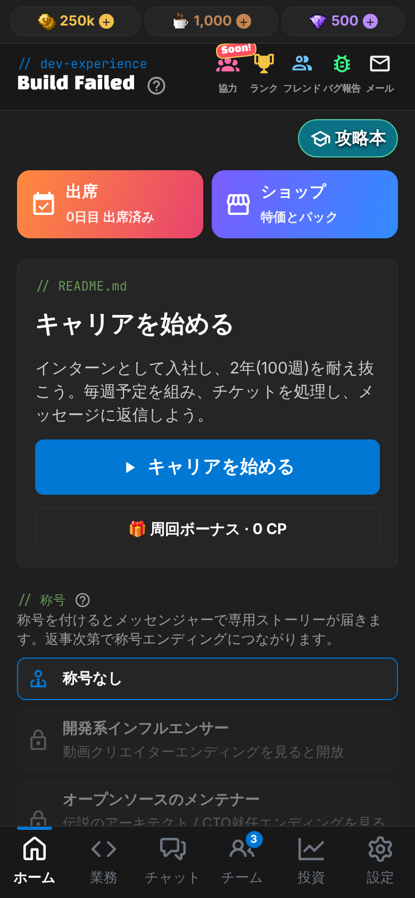

- 周回開始前: キャリアを始める、周回ボーナス（CPで買う永久ボーナス）、称号を選ぶ（称号の記事）。
- 周回中: 上に週、周回（押すと過去の記録）、役職（押すとキャリア画面）、髪、サイドの進み具合、バッグ、能力値のバー（コーディング力、集中力、体力、ストレス、評判、運）、今週のスケジュール、今週のチケット、1週間を締める。
- 上の資源バー: 周回のお金、コイン、コーヒー、神話のかけら。コーヒーの数字を押すとコーヒーのウィンドウが開きます。
- 上のアイコン: ランキング、フレンド、バグバウンティ、受信箱。
業務 💻#
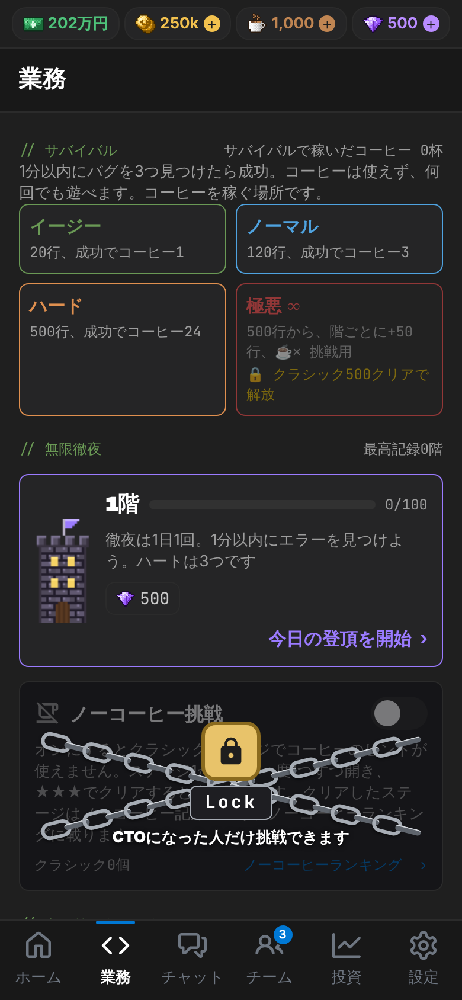
メッセンジャー 💬#
| 画面 | 説明 |
|---|---|
| メッセンジャー | リーダー、先輩、後輩、ヒロイン、家族、ヘッドハンターなどすべてのメッセージ。返信を選ぶ場所 |
| 家族 | 交際、結婚、育児の状態。今週のスケジュールにデート（交際中）、育児（子どもあり）、家事（結婚）が抜けていると赤い点 |
| ふたり | 同棲、新婚のときの2人だけのメッセージ（同棲、新婚、アルバム、家族） |
| アルバム | 子どもが生まれると開きます |
| 同僚チャンネル | カードで集めた同僚たちとの会話、同僚のストーリー（下の同僚チャンネル） |
チーム 👥#
| 画面 | 説明 |
|---|---|
| プロジェクト | 同僚と一緒にクリアするチームプロジェクト192個 |
| 同僚 | 中に一覧、同僚図鑑、合成、神話のかけら |
| 同僚 › 一覧 | 自分の同僚カード、レベルアップ、スキル、スキルツリー |
| 同僚 › 同僚図鑑 | すべての同僚カードを見る |
| 同僚 › 合成 | 重複で1段階上の同僚を作る |
| 同僚 › 神話のかけら | かけらで神話と交換、星を上げる |
| クエスト | デイリークエスト、チャレンジクエストの報酬を受け取る |
| 図鑑 | エンディング、実績、バグ（エンディング図鑑） |
チームタブのアイコンの数字は受け取れるクエストの報酬 + 受け取れる図鑑の報酬です。数字が出ていたら必ず入って受け取りましょう！
投資 📈#
| 画面 | 説明 |
|---|---|
| 株式 | 周回のお金で売買、市場ニュース |
| 不動産 | 地域別の不動産 |
| 実物資産 | 実物資産への投資 |
投資は周回のお金（円）だけを使い、周回が終わると消えます。詳しいしくみと運用法は投資の記事に別にまとめました。
最初の周回の流れ: チュートリアル1〜4章 🎓#
初めて起動すると、4章のチュートリアルが本物の画面の上で進みます。指の表示に従って押すだけでOKです。
- 1章、クラシックステージ業務タブ → クラシック1でバグ探しを覚え、コーヒー（ヒント）を1回使ってみます。クラシック2はひとりで。
- 2章、キャリアを始める、CPホームで周回の記録、周回ボーナス、称号を見て回り、キャリアを始めるを押します。
- 3章、10週のお試し周回ショップ、バッグ、能力値、スケジュール、チケット、メッセンジャー、投資をひと回りしたあと、10週のサンプル周回を自分でプレイします。機械学習とおすすめ配置のスケジュールもここでだけ体験します。
- 4章、出席チェック、同僚出席チェック、カードパックを開ける、同僚、スキル、スキルツリー、親密度、合成、神話のかけらまで。最後のセリフはでは本当の出勤に行きましょうか？です。
チュートリアルを最後までやっても途中でチュートリアル終了を押しても、エピックパック1個が受信箱に届きます（アカウントごとに1回）。必ず受信箱で受け取りましょう 🎁
チュートリアルでもらったコイン、装備、機械学習は実際のゲームにはつながりません。10週のサンプル周回もCP、コインは0です。チュートリアルの中では退職勧告も起きません。
あとでまた見たいときは、ホームの攻略本ボタンから章を選んでもう一度見られます（報酬はもう一度はもらえません）。
クラシックステージとキャリアトラック、何が違う？ 🧩#
どちらも業務タブにあるひとりでやるコードのモードです。クラシックステージ（画面の名前はクラシックチャレンジ）はバグを自分で見つけて直すモード、キャリアトラックは行ごとにバグがあるかをO/Xで判定するモードです。
| クラシックステージ | キャリアトラック | |
|---|---|---|
| やること | ファイルの中の間違った記号を見つけて押す | 行を見てバグあり O / きれい X |
| ステージ | 500個、1番から1つずつ開く | トラック5つ、トラックごとに1,200個（12章、章ごとに100個）。章は全部開いていて、章の中は1つずつ |
| 言語 | JavaScript | トラックごとに違う（フロントエンド JS、TS、バックエンド Java、TS、Python・AI、データ SQL、Python、フルスタック 5つ全部） |
| 星の基準 | 1〜300: 誤答数 / 301〜: 時間 | 章ごとに1〜80: 正答率 / 81〜100: 時間 |
| コーヒーの報酬 | 新しく取った星1つにつきコーヒー1杯（ステージごとに最大3杯）、同じステージは1日10回まで | |
クラシックステージ（画面の名前はクラシックチャレンジ）の攻略#
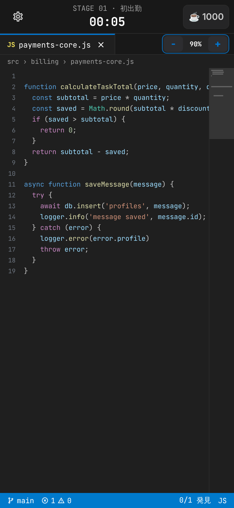
直し方
- // 今日の業務を確認始める前に、このステージで探すバグの種類が出ます。業務開始を押すと時計が回ります。
- 怪しい行を押す行が大きく見えたら間違った記号を押します。セミコロン、コロンが抜けたバグは行末を押します。
- 詰まったらコーヒー右上の☕ボタン（コーヒーを飲む）を押すと、バグのある行が黄色になります。コーヒー1杯がかかります。
- 誤タップに注意間違えて押すと10秒が足されます。遅いとリーダーがせかしてきて、時間がさらに増えます。
コードが長ければ横にめくり、ミニマップを押すか引っぱるとその行にすぐ行けます。+−で文字の大きさも変えられます。
バグ13種類と登場順
1〜300はバグをグループごとに1つずつ教えてくれて、301からは13種類が全部混ざって出ます。
| ステージ | 出るバグ | 例 |
|---|---|---|
| 1~20 | 抜けたセミコロン（;） | return total |
| 21~40 | 対応していないかっこ、閉じる中かっこ } の場所に ) | fetch(url] |
| 41~80 | 上の3種類の復習 | |
| 81~100 | 数字の0のかわりにアルファベットのO | limit = 1O0; |
| 101~120 | セミコロンの場所にコロン、コロンの場所にセミコロン | total = 0: |
| 121~160 | ここまでの復習 | |
| 161~180 | ピリオド（.）の場所にカンマ（,）、カンマの場所にピリオド | user,name |
| 181~200 | 復習 | |
| 201~210 | 対応していない引用符 | name = 'admin"; |
| 211~220 | 大文字小文字が間違った値 | isActive = True; |
| 221~230 | キーワードのタイプミス（文字の順番が入れ替わる） | retrun total; |
| 231~240 | 引用符、大文字小文字、タイプミスの復習 | |
| 241~250 | 間違った矢印（=> / ->） | items.map((x) -> x.id) |
| 251~260 | 全角入力のまま打った記号（；，） | count = 1； |
| 261~270 | 矢印、全角記号の復習 | |
| 271~300 | 引用符、大文字小文字、タイプミス、矢印、全角記号 | |
| 301~500 | 13種類すべて |
キャリアトラックの攻略#
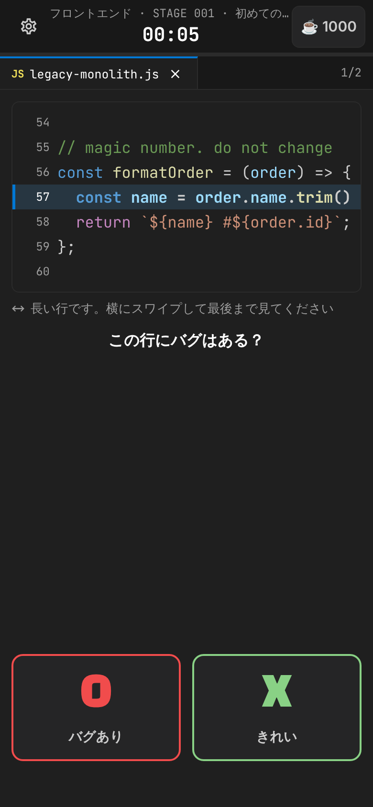
- トラック5つ: フロントエンド、バックエンド、Python・AI、データ、フルスタック。いつでも変えられて、記録はトラックごとに別です。
- 章ごとに1〜80はバグを種類別に覚え、81〜100はすべてのバグが出る地獄の区間です。
- 星: 1〜80は正答率60%なら★★、80%なら★★★。81〜100は時間。
- 間違えるとバグの解説が出て、解説を見ているあいだは時間が止まります。勉強用にもいいです 📚
- 大きさ: 章の1番のステージは判定2回（60行）から始まり、80番は200回、100番は判定2,000回（100,000行）まで大きくなります。
当てずっぽう（正答率50%前後）では★1つから上がりません。1〜80で★★★を取るには5回中4回は当てる必要があります。
セーブして出る#
クラシックステージ、キャリアトラックの途中で出ると、業務タブのいちばん上のセーブした面に同じファイル、時間、進み具合のまま残ります。モードごとに1枠なので、ほかのステージをセーブすると上書きします。続きからの1回は星とコーヒーはそのままもらえますが、ノーコーヒーの記録には載りません。
キャリアの周回: 1週間はこう流れます 📅#
キャリアはインターンとして大企業、株式会社夜明けコミットに入社して100週（2年）を過ごすモードです。最初の能力値はこうです。
| コーディング力 | 集中力 | 体力 | ストレス | 評判 | お金 | コミット |
|---|---|---|---|---|---|---|
| 25 | 60 | 80 | 20 | 20 | 33.3万円 | 10 |
リーダー、先輩、後輩の好感度は5〜15のあいだでランダムに始まります。周回ボーナスでこの数字を上げられます（下の周回ボーナス）。人事評価は第4週、そのあと12週ごと（第16、28 … 88週）、最後は第99週で全部で9回です。昇進は昇進、キャリア、退職ルートの記事で詳しく扱います。
- 今週のスケジュールを組む月〜金 + 週末、6枠に活動を入れます。
- 今週のチケット自分でやるまたは適当に処理。
- メッセージに返信メッセンジャーのメッセージに答えます。返信ごとに能力値、好感度が変わります。
- 1週間を締めるスケジュール、チケット、週給、生活費が精算され、必須のメッセージが来たら答えてから次の週へ。
今週のスケジュールの組み方#
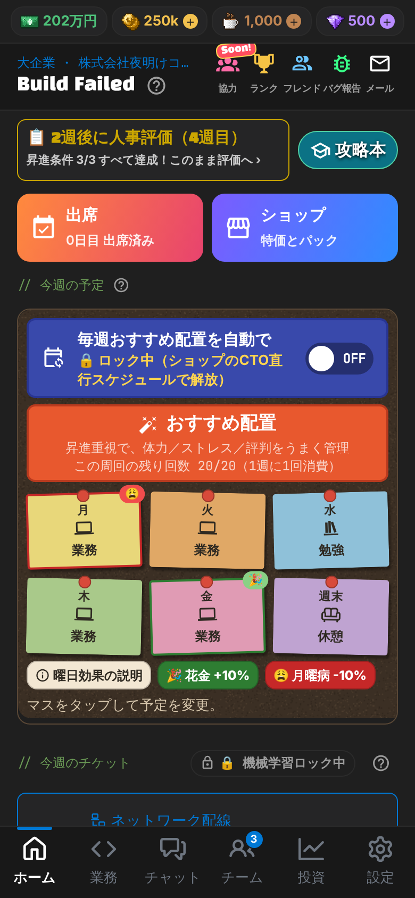
活動1つが1日で与える基本の効果です（会社、装備、周回ボーナスで少しずつ変わります）。週末の枠は1日半なので効果が1.4倍です。
| 活動 | いい点 | 悪い点 | 週末 |
|---|---|---|---|
| 💻 業務 | 成果1.2、評判1、コーディング0.5、コミット1 | 体力 -5、ストレス +4、集中 -2 | 可能 |
| 🌙 残業 | 成果2.2、評判2、コーディング0.6、コミット1、大企業は残業手当3,333円 | 体力 -10、ストレス +8、集中 -4、髪 -0.5 | なし |
| 📚 勉強 | コーディング2、コミット5、集中 +1 | 体力 -2、ストレス +2 | 可能 |
| 🏃 運動 | 体力 +9、ストレス -3、集中 +2 | 可能 | |
| 🛋 休憩 | 体力 +8、ストレス -7、集中 +4 | 可能 | |
| 🚀 サイドプロジェクト | サイド0.7、コミット3、ストレス -2、コーディング0.5 | 体力 -4 | 可能 |
| 🍜 同僚とランチ | ストレス -15、リーダーの好感度 +6、先輩、後輩 +3、評判1 | 週給の15%を使う | なし |
| 💞 デート | 関係維持、ストレス -8、集中 +1 | 体力 -2、お金 -5,556円 | 可能（相手がいるとき） |
| 👶 育児 | 家族の維持、ストレス -2 | 体力 -5、お金 -2,222円 | 可能（子どもがいるとき） |
曜日の効果（スケジュール配置のボーナス）
| 効果 | 条件 | 結果 |
|---|---|---|
| 🔥 連続集中 | 同じ活動（業務、残業、勉強、サイドのどれか）を3日連続 | 3日目からその活動の効果 +20% |
| 🎉 花金 | 金曜日の業務、残業、勉強、サイド | +10% |
| 😩 月曜病 | 月曜日の業務、残業、勉強、サイド | -10% |
| 😵 残業の後遺症 | 残業の翌日に業務か残業 | 成果、評判 -30%（あいだに休憩、運動をはさむとなくなる） |
| ⭐ 評価週 | 人事評価がある週 | 成果1.5倍 |
| 🛋 週末 ×1.4 | 週末の枠 | 何を入れても1.4倍 |
| 💔 週末出勤 | 交際、結婚中に週末の業務 | 相手の好感度 -2 |
リーダーの好感度が50以上なのにその週に同僚とランチが一度もないとリーダーの好感度 -3、80以上なら期待値が高くなって毎週 -2ずつ減ります。
スケジュール別の1週の変化の比較
スタート時のインターンで、スケジュールの枠だけで計算した1週の合計です。チケット、メッセージ、会社の週のストレス（大企業 +2）は除いています。
| スケジュール（月〜週末） | 成果 | 体力 | ストレス | 評判 | コーディング |
|---|---|---|---|---|---|
| 基本: 業務、業務、勉強、業務、業務、休憩 | 4.3 | -10.8 | +8.2 | +4.0 | +4.0 |
| 業務5 + 休憩 | 6.1 | -13.8 | +10.2 | +5.6 | +2.8 |
| 業務、業務、ランチ、業務、業務、休憩 | 4.3 | -8.8 | -8.8 | +5.0 | +2.0 |
| 業務、残業、休憩、業務、残業、休憩 | 6.2 | -10.8 | +7.2 | +6.1 | +2.2 |
| 残業5 + 休憩 | 8.3 | -38.8 | +30.2 | +8.4 | +3.4 |
残業5日は成果はいちばん高いですが、体力が1週に38.8ずつ減ります。体力80から始めると3週目に倒れ、ストレスもすぐ100になります。残業は残業 → 休憩のようにあいだに休む日をはさむと、後遺症（-30%）も避けられて体も持ちます。
おすすめ配置を押すと昇進に合わせてスケジュールをかわりに組んでくれます。無料で1周回に20回で、同じ週にまた押しても回数は減りません。ただし業務、残業、勉強、運動、休憩（平日はランチも）だけを使って6枠を全部組み直すので、デート、育児の枠も消えます。交際、育児中なら押したあとでその枠を入れ直しましょう 💞
サイドプロジェクト
サイドが20を超えると毎週収益が入ります（進み具合が上がるほど大きくなります）。25で評判 +3、コミット +20、50で評判 +6、75で55.6万円、評判 +4、100で評判 +10、コミット +50とサイドプロジェクト専用のエンディングが開きます。
今週のチケット#
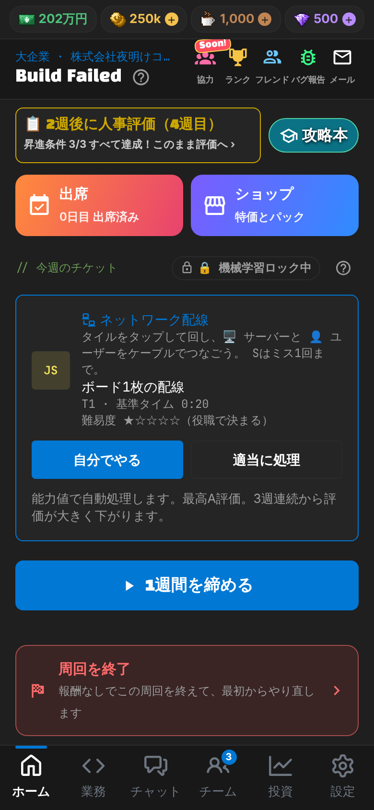
チケットの種類6つ
毎週1つずつ来て、6週ごとのまとまりに6種類が1回ずつ出ます。最初の週はいつもバグ修正で、同じ種類が2週連続で出ることはありません。
| 種類 | やること | コーヒーの助け |
|---|---|---|
| 🐛 バグ修正 | コードの中のバグを探す（クラシックステージと同じ方式） | バグの行を表示 |
| 🔍 リリース前後の比較 | 2つの画面の間違い探し | 変わった所を1か所教える |
| 🔥 サーバー過負荷を防げ | 過熱したサーバーを押して冷やす | サーバーを全部冷やす |
| 🚀 デプロイ順を決めよう | 必要なものから起動する | 今起動できるカードを1枚表示 |
| 🔌 ネットワーク配線 | タイルを回してケーブルをつなぐ | タイルを1つ合わせる |
| 📋 ログ仕分け | 赤い⛔ ERRORだけを押す（役職が上がると🚨 CRITICALも） | 画面のERRORを全部処理 |
バグ修正以外はコーディングを知らなくても大丈夫です。次長までは軽いです（バグ修正はバグ1〜5個、ほかの種類もラウンド半分）。部長からバグ修正はバグ10個、ファイルとミニゲームが役職ごとに大きくなります。
チケット画面の見方
チケットのカードの自分でやるを押すと、先にルールの画面が出ます。いちばん上のS基準タイムの中で終えればSを狙え、下の行に今回のチケットでやること、ミスしたら起きること、コーヒー1杯で何を助けてくれるかが書いてあります。読んだら業務開始を押しましょう。
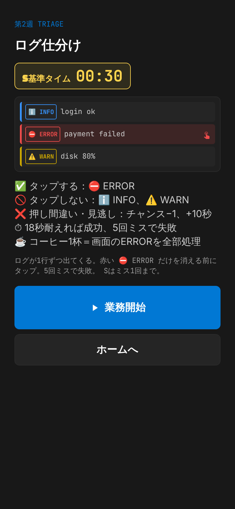
部長からはミニゲームが難しいバージョンに変わります（似た文字探し、制限時間、行き止まりの分かれ道のような罠ができます）。さらに高い役職ではSをもらうにはミスが0回である必要があります。今何が適用されるかはルール画面にそのまま出ます。
🐛 バグ修正
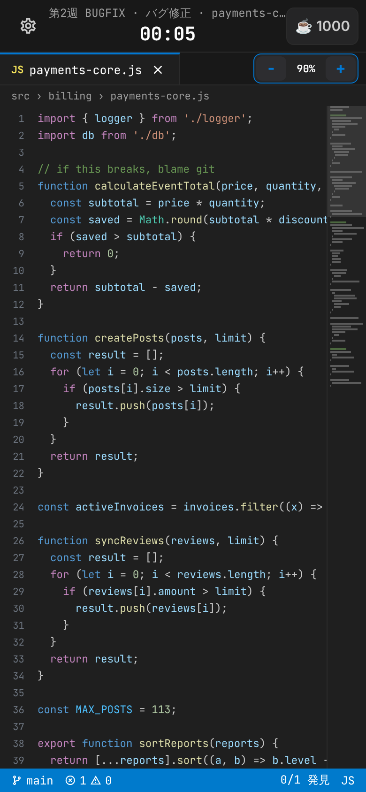
- 怪しい行を押すクラシックステージとまったく同じです。行を押すとその行が大きく拡大されます。
- 間違った文字を押す拡大された行で間違った記号や文字を押すと直ります。下の状態の行の0/1 発見が上がります。
- 詰まったらコーヒー右上の☕を押すと、コーヒー1杯でバグの行を表示してくれます。
周回の最初の週はいつもバグ修正です。役職が上がるほどファイルが長くなり、バグの種類も増えます。
🔍 リリース前後の比較
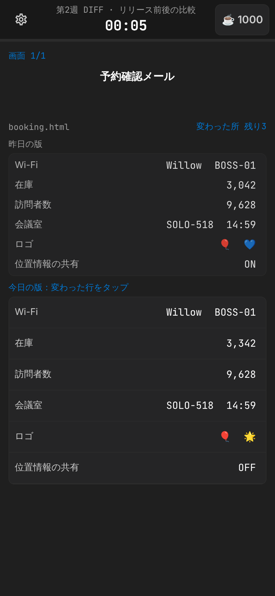
間違い探しです。昨日の画面と今日の画面を比べて、今日のバージョンで変わった行を全部押せばOKです。数字、単語、絵文字、色、ON/OFFが変わっています。右上に残りの数が出て、変わっていない行を押すと時間のペナルティが付きます。コーヒー1杯で変わった所を1か所教えてくれます。
上から1行ずつ昨日の値と今日の値を交互に見ましょう。難しいバージョンではOと0、lとIのような似た文字や1分違いの時刻まで変わるので、数字の欄は最後の桁まで確認するのが安全です。
🔥 サーバー過負荷を防げ
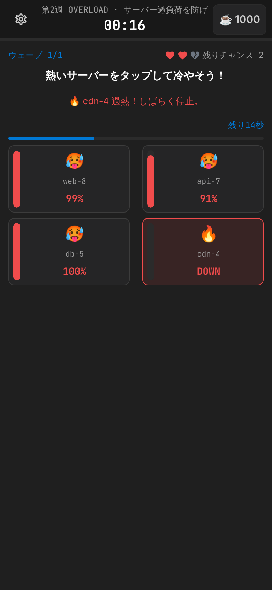
サーバーのカードを押すと温度が0%に下がります。温度が100%になるとサーバーが壊れ、チャンスのハートが1つ減ります。ウェーブの時間が終わるまで耐えれば成功、ハートを全部失うとチケット失敗（C評価）です。コーヒー1杯で全サーバーを一度に冷やしてくれます。
いちばん熱いサーバーから押しましょう。難しいバージョンには一瞬で熱くなる⚡サーバーが混ざっているので、そのサーバーは少し早めに冷やしておくと楽です。
🚀 デプロイ順を決めよう
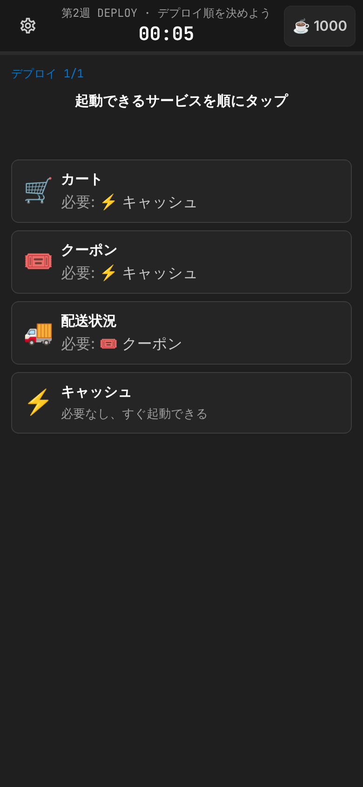
サービスのカードを起動できる順番どおりに押すパズルです。カードの下の必要に書かれたサービスがすべて起動していないと、そのカードは起動できません。上の絵なら、必要なものがないキャッシュを先に、次にカートとクーポン、最後にクーポンが必要な配送状況の順番です。まだ起動できないカードを押すと時間のペナルティが付きます。コーヒー1杯で今起動できるカードに☕の印を付けてくれます。
🔌 ネットワーク配線
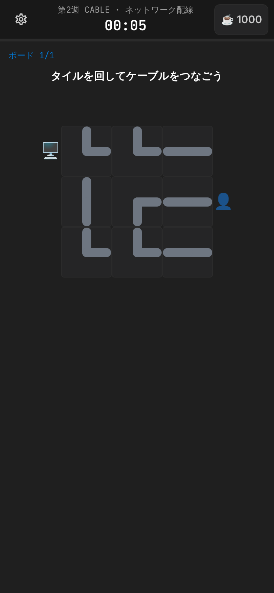
タイルを押すたびに90度ずつ回ります。サーバーからユーザーまで1本でつながればそのボードは終わりです。コーヒー1杯でずれたタイルを1つ直してくれます。
サーバー側から明かりがついた道をたどって次のタイルを合わせると速いです。難しいバージョンのT字、十字のタイルは行き止まりの分かれ道のことが多いので、ユーザーまで行く道だけ気にしましょう。
📋 ログ仕分け
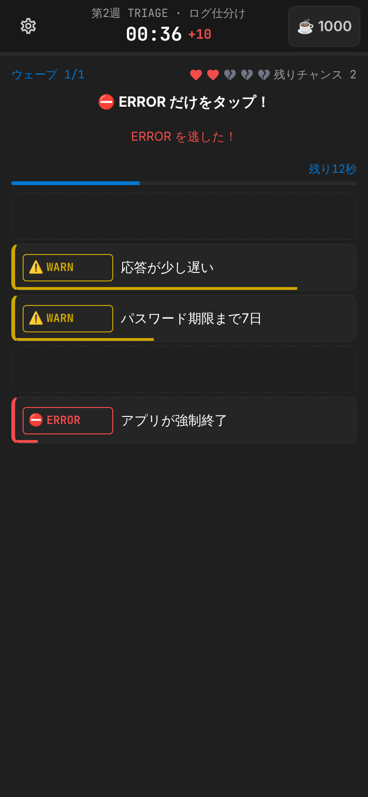
ログが1行ずつ浮かんでは消えます。赤い⛔ ERRORの行だけを押して、ℹ️ INFOと⚠️ WARNはそのままにしましょう。間違えて押したりERRORを逃したりするとチャンスが1つ減り、決まった時間を耐えれば成功です。部長からは🚨 CRITICALも押す必要があり、文の内容がわざと紛らわしく出ます。コーヒー1杯で画面のERRORを全部処理してくれます。
文は読まずに左のタグの色だけを見ましょう。赤いタグだけ押すと考えるとミスがぐっと減ります。
評価の基準
| 評価 | 条件（基準タイムはバグが多くティアが高いほど長い） | 週の締めの効果 |
|---|---|---|
| S | 基準タイム以内 + 誤タップ1回以下 | 評判 +3、リーダーの好感度 +2 |
| A | 基準の1.6倍以内 + 誤タップ3回以下 | 評判 +1、リーダー +1 |
| B | 基準の2.6倍以内 | リーダー +1 |
| C | それ以外 | 評判 -2、リーダー -3 |
| やらない | チケットをやらずに締める | 成果 -3、評判 -3、リーダー -5、ストレス +3 |
終わったチケットはSになるまでやり直せて、よりいい評価だけが残ります。やり直しても下がらないので、気軽に再挑戦しましょう。
ストレスが70以上だと、適当に処理も機械学習も止められます。リーダーが自分でやれと言います。
能力値がチケットに与える効果
| 条件 | 効果 |
|---|---|
| 体力20未満 | 誤タップごとに時間のペナルティ +5秒 |
| 集中力30未満 | コードがふだんの明るさの55%に暗くなる |
| ストレス70以上 | リーダーの催促2倍、自動処理不可 |
| コーディング力70以上 | ミニマップにバグの位置がうっすら見える |
| 先輩の好感度70以上 | チケットの開始時に先輩がバグを1つ見つけてくれる |
| 次長以上 + チケット累計100 / 200 / 300個 | ベテランボーナス: バグ -20% / -30% / -40% |
| レジェンド、神話の同僚を保有 | 同僚ごとのチケットのパッシブでバグ減少（ベテランと合わせて最大半分） |
体力、ストレス、燃え尽き、倒れる 🔥#
ここがいちばん大事です。判定は週の締めのときにしますが、締めの瞬間の数字ではなくその週に記録した最低の体力と最高のストレスで見ます。返信1つで体力が0になったら、週末の休憩でまた上がっても倒れたことになります。
| 状況 | 条件 | 結果 |
|---|---|---|
| 🤒 倒れる | その週に体力が一度でも0 | 次の1週は病欠、体力45に |
| 🔥 燃え尽き | その週にストレスが一度でも100 | 評判 -10、髪 -5、2週の休み、ストレス40、体力最低50 |
| 🍗 燃え尽き3回 | 1周回に燃え尽き3回 | 唐揚げ屋のエンディングで周回終了 |
| 🛌 休む週 | 病欠、燃え尽きの休み | 体力 +25、ストレス -25、集中 +10。スケジュール、チケット、恋愛のチェックは飛ばす |
| 💇 ストレス70以上 | 週の締めのとき | 毎週髪 -1 |
防ぐ方法もあります: 装備落ち着けよ、友よ（燃え尽きを1回防ぐ）、九死に一生（倒れるかわりに体力100）、結婚後のあふれた好感度の特典燃え尽きの盾、周回ボーナス医療保険、ゴールデンパラシュート。装備は装備、消耗品、特典はヒロイン攻略を見てください。
体力は0にならないように、ストレスは70を超えないように。この線だけ守りながら業務、残業を入れればOKです。週末1枠の休憩、週1回のランチでストレスはほぼ抑えられます。
メッセージの返信、既読スルー#
1週間を締めるとメッセンジャーにメッセージがたまります。返信ごとに能力値と好感度が変わり、答えるとすぐ返事が来ます。先週答えなかったメッセージは次の締めのときに既読スルーとして扱われ、通知を消すも全部既読スルーです。好感度がある人（ヒロイン、リーダー、先輩、後輩）は既読スルーすると好感度が削られるので気をつけましょう。プロフィールを押すといちばん上に固定されます。
周回の終わりの報酬: CPとコイン#
| 報酬 | 条件 | 量 |
|---|---|---|
| キャリアポイント（CP） | 100週を最後まで終えた周回 | 役職が高いほど多い（インターン20、1役職ごとに +1、CTO 29） |
| コイン | 100週を最後まで終えた周回 | 役職が高いほど多い（インターン2,000、1役職ごとに +100、CTO 2,900） |
| カードパック | 新しいエンディングを見るたび | ふつうのエンディングはレアパック、称号エンディングはエピックパック |
| 広告で2倍 | 10分以上プレイした周回 | CP、コインをもう1回 |
退職勧告、唐揚げ屋、起業退職のように100週より前に終わった周回はCP、コインが0です（新しいエンディングのカードパックと図鑑の報酬はもらえます）。そして10分もかからなかった周回は100週を満たしてもCP、コイン、コミットXPがありません。起業のために退職したなら、役職なしで20です。
通貨の総まとめ: コーヒー、コイン、カード 💰#
ゲームには通貨が5つあります。周回のお金（円、周回の中だけ）、コーヒー（ヒント）、コイン（装備、同僚）、神話のかけら、CP（周回ボーナス）。
コーヒー ☕ の手に入れ方すべて#
コーヒーはクラシックステージ、キャリアトラック、チケットでヒント1回に1杯です。チームプロジェクトでは使えません。CTOエンディングの図鑑の報酬を受け取ると無限コーヒー（∞）になります。
| どこで | どれくらい | 備考 |
|---|---|---|
| サバイバル勝利 | イージー1、ノーマル3、ハード24 | 無制限に繰り返し。コーヒーの主な収入源。極悪はコーヒーなし |
| 出席チェック | 毎日5 | |
| デイリークエスト | 4つ、1つにつき5 | チームプロジェクトのクリア、無限徹夜1回、星3つでクリア、チケットを自分でやる |
| クラシックステージ、キャリアトラック、チームプロジェクト | 新しい星1つにつき1（ステージごとに最大3） | 同じステージは1日10回まで |
| 広告無料コーヒー | 30 | 1日の回数制限 |
| サバイバルのコーヒー2倍 | その回のコーヒー2倍 | 広告、広告削除パックは自動 |
| 無限徹夜 | 階の初クリアごとに1（100階なら100） | |
| 図鑑のバグ | 新しいバグの種類ごとに5 | 5言語56種類なら280杯 |
| フレンド | 3（フレンド1人が1日1回） | 受信箱で |
| 今日のホットフィックス | 平日10、週末20 | |
| サーバー障害対応 | 最大20（週間） | みんなが見つけたバグの割合に応じて |
| シーズンパスの無料の行 | 合計90 | パスの行は合計920 |
| ニックネーム抽選 | 100（パスの抽選1,000） | 当選したら |
コーヒーはひとまとまりに見えますが、ショップで買ったコーヒーは別に覚えておいて、使うときは有料のコーヒーから減ります。
サバイバルのハードは1回でコーヒー24杯です。イージー（1杯）、ノーマル（3杯）で手慣らしして、慣れたらハードが時間あたりいちばん稼げます。
コイン 💰 の手に入れ方、使い方#
最初は300コインから始まります。チームプロジェクトはコインをくれません。
| 手に入る場所 | 量 |
|---|---|
| 周回の完走（100週） | 2,000~2,900 |
| デイリークエスト今日周回を1回完走する | 2,000 + CP 20 |
| 出席チェック | 毎日1,000 |
| 無限徹夜の階の初クリア | 階ごとに100（100階なら10,000） |
| Git Blameリレー | チームが3個直すたびに2,000 |
| 今日のホットフィックス | 平日2,000、週末3,000 |
| サーバー障害対応 | 最大10,000（週間） |
| シーズンパスの無料の行 | 合計7,800 |
| 装備を売る | 買った値段の10% |
| 使いどころ | 価格 |
|---|---|
| カードパック | ノーマル2,000、レア8,000、エピック20,000（レジェンドパックは買えない） |
| 装備 | 装備、消耗品参照 |
| 同僚のレベルアップ | レベルが上がるほど高くなる（等級が高いほどもっとかかる） |
| 合成 | 1,000, 2,500, 50,000, 100,000 |
| スキルツリーのリセット | 500 |
カードパック 🃏 の確率と天井#
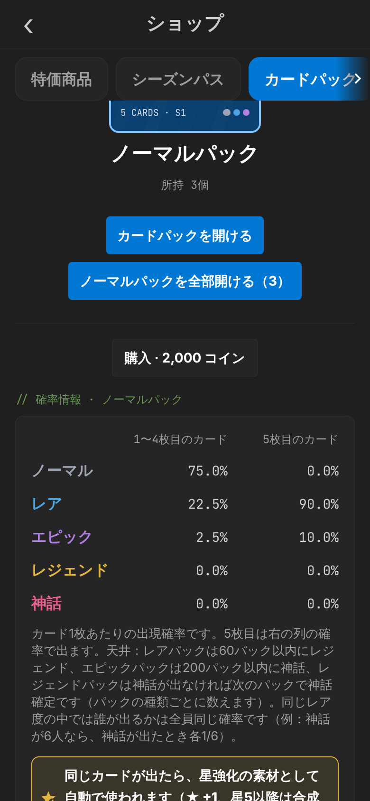
パック1つにカード5枚。1〜4枚目と5枚目（保証カード）の確率が違います。
| パック | 1〜4枚目 | 5枚目 | 天井 |
|---|---|---|---|
| ノーマルパック（2,000コイン） | ノーマル75%、レア22.5%、エピック2.5% | レア90%、エピック10% | なし |
| レアパック（8,000コイン） | レア65%、エピック35% | レア45%、エピック54.7%、レジェンド0.3% | 60パック以内にレジェンド以上1枚 |
| エピックパック（20,000コイン） | レア50%、エピック47.5%、レジェンド2.5% | エピック89.5%、レジェンド10%、神話0.5% | 200パック以内に神話1枚 |
| レジェンドパック（購入不可） | エピック13%、レジェンド62%、神話25% | レジェンド63%、神話37% | 神話なしで終わったら次のレジェンドパックで神話確定 |
| 目標 | 平均 | 中央値 | 90%がこの中に | 最初のパックで出る確率 |
|---|---|---|---|---|
| ノーマルパックでエピック | 5.3パック | 4パック | 11パック | 18.8% |
| レアパックでレジェンド以上 | 54.5パック | 60パック | 60パック | 0.3% |
| エピックパックでレジェンド以上 | 5.3パック | 4パック | 11パック | 19.1% |
| エピックパックで神話 | 126.8パック | 139パック | 200パック | 0.5% |
| レジェンドパックで神話 | 1.2パック | 1パック | 2パック | 79.9% |
神話のかけら#
神話のかけら100個で好きな神話の同僚1人、30個で持っている神話の星 +1です。神話は星5つになると虹色のカードになります。かけらは無限徹夜の30、60、100階（登るたび、1日最大3個）、シーズンパスの無料の行（合計20）、人気度、バグバウンティの報酬などから来ます。
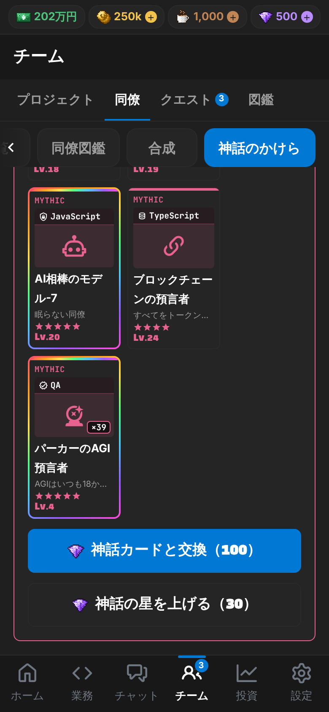
かけら100個で好きな神話カードをもらう
- 神話カードと交換を押すかけらが100個以上なら神話カードと交換（100）ボタンがつきます。
- カードを選ぶ神話の同僚6人が全員見えます。ガチャではなく自分で選ぶので運は要りません。カードの下に未所持または所持★3（交換すると星+1）のように結果が先に書いてあります。
- もう一度押して確定最初に押すと黄色い枠ともう一度タップで確定（100）が出ます。同じカードをもう一度押すと、かけら100個が引かれて演出が出ます。
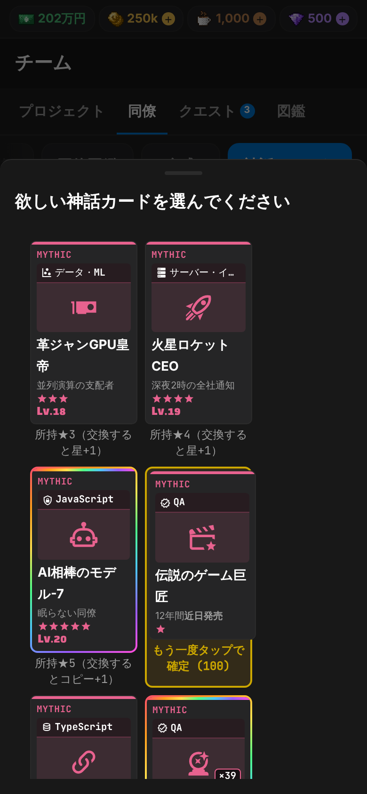
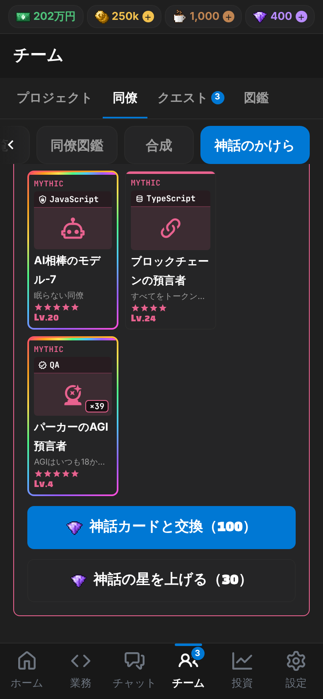
かけら30個で神話の星を上げる
もう持っている神話の同僚の星だけ上げたいなら神話の星を上げる（30）のほうが安いです。星を上げるカードを選んで、同じくもう一度押すと確定です。カードの下に★3 → ★4のように変わる星が見え、星5つのカードは（最大）と表示されて選べません。
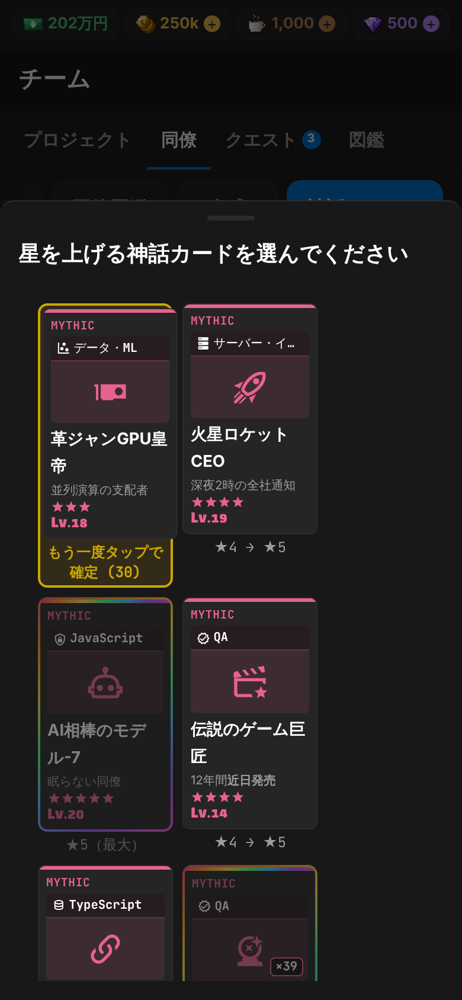
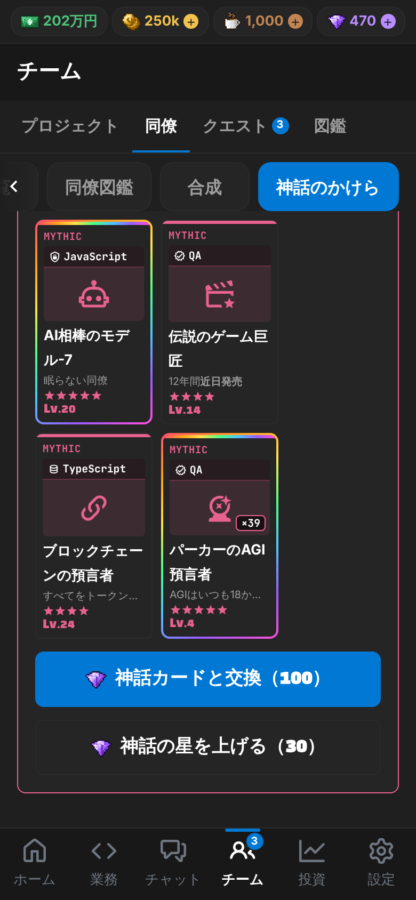
まだ持っていない神話がいるなら、100個の交換で新しい神話から連れてくるのがいいです。神話はチームプロジェクトの最後の段階に必ず必要で、レジェンド、神話だけが持つチケットのパッシブもあるからです。6人全員そろったら30個ずつ星を上げればOKです。
毎日こなすルーティン ✅#
出席チェック#
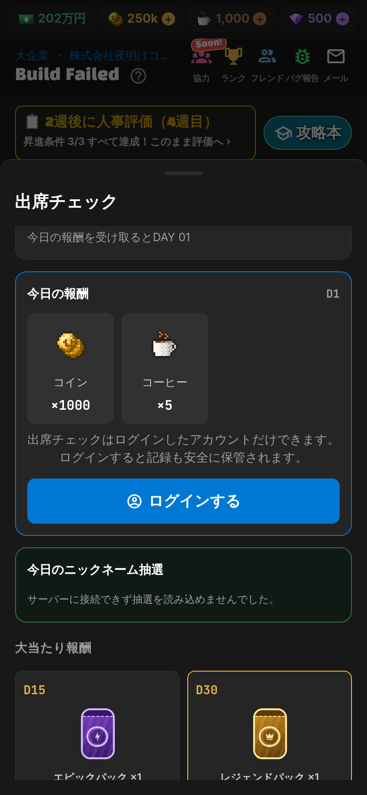
| 日 | 報酬 |
|---|---|
| 毎日 | コーヒー5 + コイン1,000 |
| 3日ごと（3、6、9 …） | + レアパック1 |
| 15日 | + エピックパック1 |
| 30日 | + レジェンドパック1（その翌日から1日目からまた） |
| 累計60回ごと | 神話の同僚1人（受信箱で選ぶ） |
出席チェックはログインしたアカウントだけができます（ゲストはログインするが出ます）。連続が途切れてもカレンダーの枠と累計の出席はそのままです。今日出席すると、明日のニックネーム抽選の対象にもなります。
クエスト#
デイリークエストは0時にリセット、チャレンジクエストは1回だけ。条件を満たしたら、チームタブ › クエストで受け取るを押さないと入りません。デイリークエストは1つにつきコミットXP 200もくれます。
| デイリークエスト | 報酬 |
|---|---|
| 今日周回を1回完走する（100週、10分以上） | CP 20、コイン2,000 |
| チームプロジェクトを1回クリア | コーヒー5 |
| 無限徹夜を1回プレイ | コーヒー5 |
| チームプロジェクトを星3つでクリア | コーヒー5 |
| 今週のチケットを自分で1回こなす | コーヒー5 |
| 今日のエンディング（結婚 → 退職勧告 → 恋愛 → 育児 → 子どもが大学生、日ごとに順番に） | ノーマルパック1 |
| 周回を3回完走する | レアパック1 |
チャレンジクエストは段階式なので、今の段階だけが見えます: チームプロジェクトの星、カードパックの開封、エンディング数、同僚のレベル、等級別の同僚の加入、同僚の数、大きなプロジェクトのクリア（行数）、プロジェクト数、親密度のハート、クラシックの星、キャリアトラックの星、サバイバルの段階別の初クリア、周回の完走数。報酬は前の段階がノーマルパック、後ろの段階がレアパックです。
報酬型広告#
| 広告 | 報酬 |
|---|---|
| 周回の報酬2倍 | 10分以上プレイした周回のCP、コインをもう1回 |
| 無限徹夜の復活 | 落ちた階でハート満タンからもう一度 |
| サバイバル2倍 | 勝った回のコーヒー2倍 |
| 無料カードパック | ノーマルパック1 |
| 無料コーヒー | コーヒー30 |
広告ごとに1日の回数制限があり、残りの回数はボタンに見えます。広告削除パックがあれば広告なしですぐもらえます。
シーズンパス（コミットXP）#
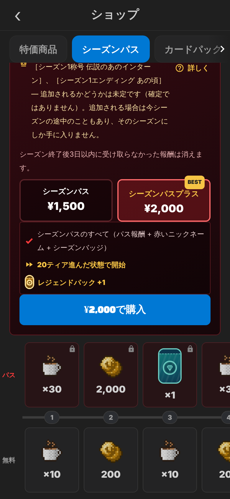
シーズン（今シーズンは新卒採用シーズン、60日）のあいだ、コミットXP1,000ごとに1段階、50段階まで。無料の行は誰でも、パスの行はシーズンパスを買った人だけもらえます。シーズンが終わっても3日間は受け取れます。
| コミットXPの手に入れ方 | XP |
|---|---|
| 周回100週の完走（10分以上） | 1,000 |
| クラシック、キャリアトラックのクリア | 50 (★★★ 100) |
| チームプロジェクトのクリア | 150 |
| 無限徹夜 | 階ごとに3（40階なら120） |
| サバイバル勝利 | イージー30、ノーマル50、ハード80、極悪は階ごとに100 |
| デイリークエスト | 1つにつき200 |
1日の上限は2,000 XP（デイリークエストを含む）で、同じステージ、プロジェクトは1日3回までしかXPをくれません。だから50段階（50,000 XP）はどんなに早くても25日かかります。毎日少しずつが正解です。
| 行 | 50段階までの合計 | 50段階の報酬 |
|---|---|---|
| 無料 | コーヒー90、コイン7,800、神話のかけら20、ノーマルパック8、レアパック6、エピックパック3 | 神話のかけら20 |
| パス | コーヒー920、コイン66,000、神話のかけら50、レアパック10、エピックパック8、レジェンドパック1、神話の同僚1 | 好きな神話 + かけら30 |
50段階を超えると1,000 XPごとに行ごとの?ボーナスボックスができます。無料ボックス: コーヒー10（40%）、コイン200（40%）、ノーマルパック（20%）。パスのボックス: コーヒー50（32%）、コイン1,000（32%）、レアパック（28%）、エピックパック（7.5%）、神話のかけら1（0.5%）。
受信箱#
チュートリアルの報酬、出席、図鑑の神話の同僚選び、フレンドのコーヒー、抽選の当選、昨日受け取らなかった無限徹夜の報酬などが集まります。ホームの右上のアイコンです。神話の同僚は受信箱で受け取ると選ぶウィンドウが開きます。
同僚とチームプロジェクト 👥#
同僚カード#
同僚は84人（ノーマル24、レア22、エピック17、レジェンド15、神話6）です。最初はインターンの陽菜、チェ新人、チョンQA、オ契約社員、パクDBAの5人とノーマルパック1個から始まります。同僚はチームプロジェクトでだけ働きます（キャリアのチケットをかわりに探してはくれません。レジェンド、神話のチケットのパッシブだけ例外）。
- 能力値: 速度（1秒に流し見る行数）と正確度（通り過ぎたバグに気づく確率、低いと誤報）。
- レベル: コインで最大30。レベルが上がるとスキルツリーのポイントもできます。
- 星: 同じカードがまた出るとすぐ星 +1（最大5）。そのあとはコピーとして貯まって合成の材料になります。
- 専門分野: その言語で1.5倍速く、そのバグの種類をよく見つけます。
合成#
| 材料 | コイン | 結果（いつも成功） |
|---|---|---|
| ノーマルのコピー2 | 1,000 | ランダムなレア |
| レアのコピー2 | 2,500 | ランダムなエピック |
| エピックのコピー5 | 50,000 | ランダムなレジェンド |
| レジェンドのコピー4 | 100,000 | ランダムな神話 |
同じ等級のカードを集めて1段階高い等級の同僚1人をランダムでもらう機能です。その等級の同僚はすべて同じ確率で、合成はいつも成功します。もらった同僚がすでにいれば星が1つ上がり、星5つならコピーが1枚貯まります。
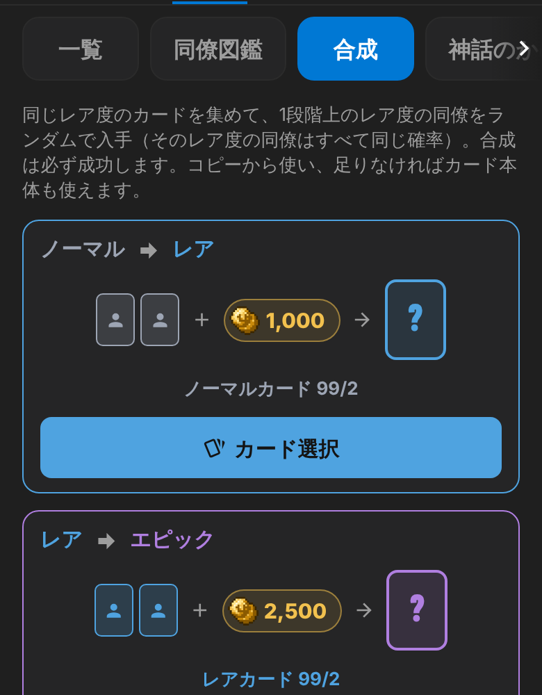
- 合成タブを開くチームタブ › 同僚 › 合成に行きます。
- カード選択を押す合成する等級の枠のカード選択を押します。
- 材料を入れるカードを押すたびに材料が1つずつ入ります。コピーが先に使われ、コピーがなければカードそのものが材料になります。全部埋めたら合成を押します。
- 確認本当に合成しますか？のウィンドウで確認を押すと、演出とともに新しい同僚が出ます。
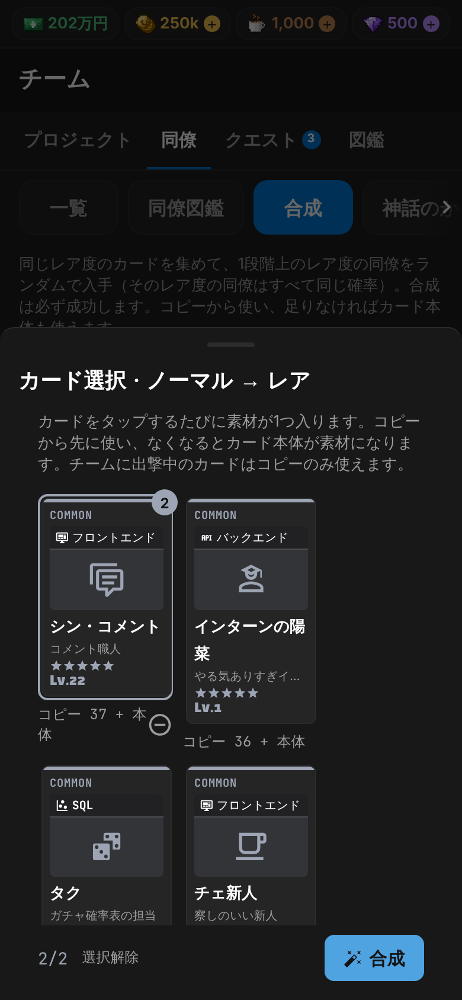
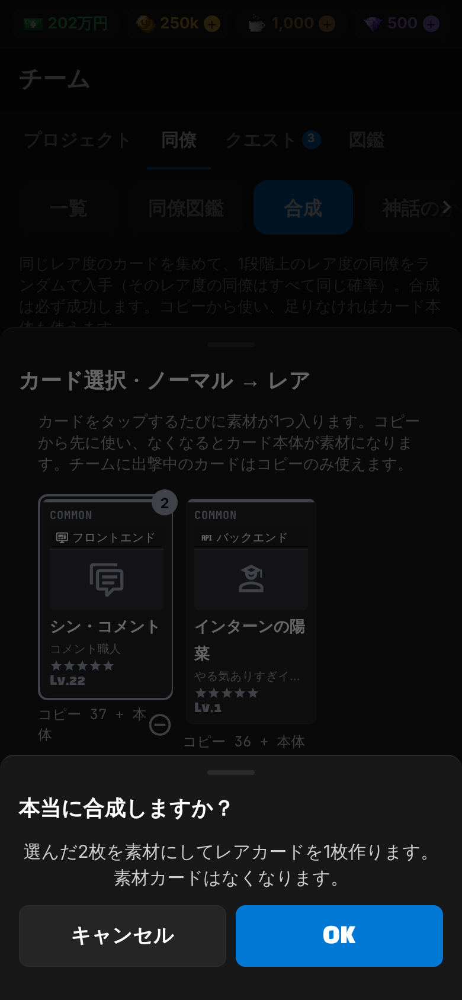
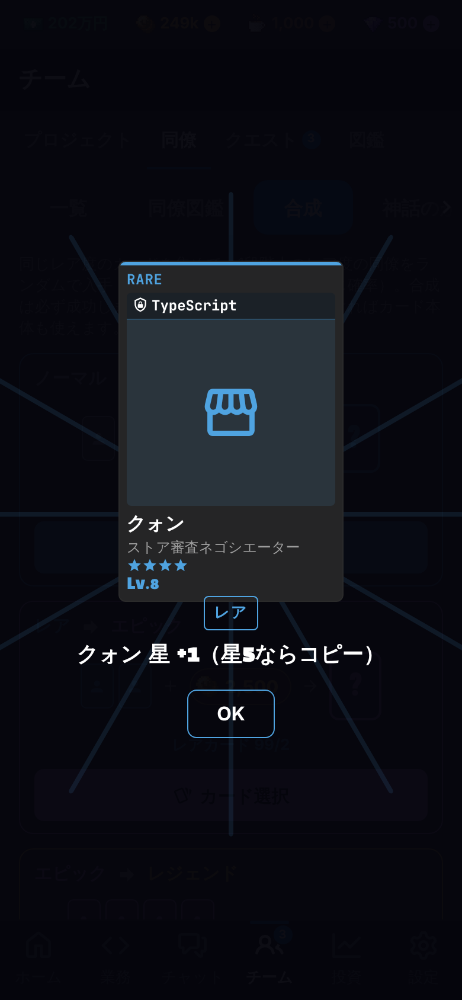
合成の材料にカードを自分で選ぶときは、コピーだけでなくカードそのものも入れられます。カードそのものを使うとその同僚が一覧から消えます（画面に赤い警告が出ます）。
合成は余ったコピーだけでするのがいいです。星5つを満たしたカードから出るコピーは合成しか使い道がないので、惜しまず入れてOKです。レジェンドのコピー4枚で神話の同僚が出るので、レジェンドのコピーは貯めておきましょう。
チームプロジェクトとチームパワー#
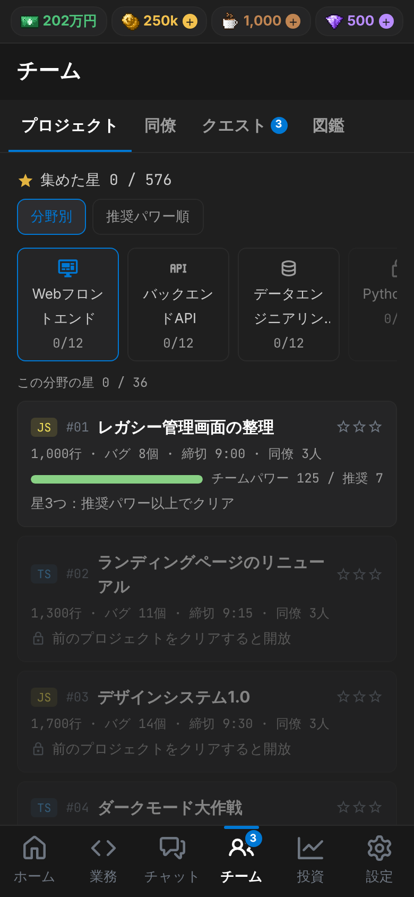
- 16分野、分野ごとに12個なので192個です。最初は3分野が開いていて、プロジェクトを3個クリアするたびに分野が1つずつ開きます。分野の中は順番どおり。
- ファイルは1,000行から始まり、最後（最終、神話だけ参加）は80,500行です。
- チームパワーは連れて行く同僚の速度と正確度が高いほど大きくなります。その言語の専門家は速度1.5倍、正確度 +5%。
- チームパワーが推奨パワーより1でも低いと過負荷で速度が1/4になり、スキルも使えないのでほぼ失敗します。推奨以上で勝てば必ず星3つです。
- 同僚が報告箱に上げた行が本物なら修正、違えば誤報。問題のない行を修正すると8秒、自分で押して間違えると3秒減ります。コーヒーは使えません。
- 周回中に勝つと、その週の成果に +1.5 / 2.5 / 4（星1/2/3、会社によって少し違う、週最大6）が付きます。人事評価の直前に使うのにぴったりです。
- 同僚の組み合わせ: 決まった同僚を一緒に連れて行くとチーム全体にボーナスが付きます（23種類）。たとえばQAコンビ（チョンQA + ムンQAリード）は間違った報告 -25%です。編成画面でついた組み合わせは緑色です。
スキルツリー#
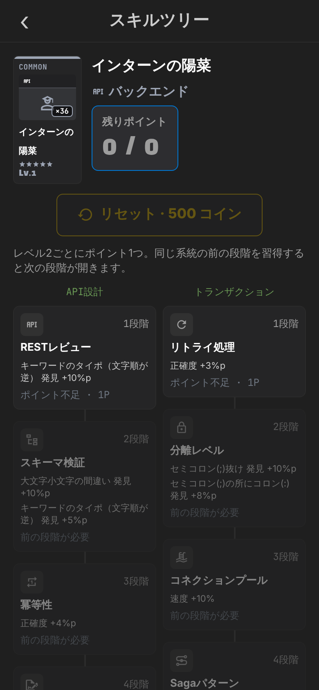
同僚ごとに分野（フロントエンド、バックエンド、サーバー・インフラ、データベース、セキュリティ、データ・ML、QA）によってツリーが違います。レベルアップで得たポイントを振って、気に入らなければ500コインでリセットします。
同僚チャンネルと親密度#
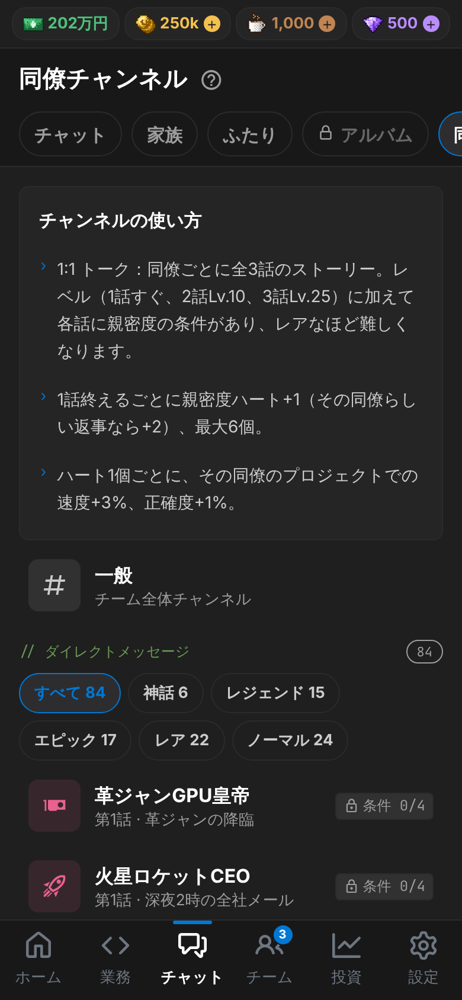
カードで集めた同僚ごとに3話のストーリーがあり、1話終えるたびにその同僚の親密度のハートが上がります。ハートはチームプロジェクトでその同僚をよりよく働かせてくれます。#一般の部屋はプロジェクトの反応と入社のあいさつを見る場所です。
トークルームの開き方
- 同僚チャンネルへ行くメッセンジャータブの上のスイッチで同僚チャンネルを押します。タブに数字があれば、新しい書き込みや開いたストーリーがあるという意味です。
- 同僚を選ぶダイレクトメッセージの一覧で同僚を押します。上の等級のチップ（すべて、神話、レジェンド…）で絞り込めて、ストーリーが開いた同僚には新ストーリーの表示、まだロックされた同僚には条件 1/3のように満たした数が見えます。
- 通知の整理通知がたまったら、上の通知N件を消すで一度に既読にできます。ストーリーそのものはそのまま残ります。
話ごとの条件の見方
トークルームの下の第1話の親密度条件を確認ボタンを押すか部屋に入ると、上に親密度の条件のウィンドウが付きます。条件ごとに✓、✗と進み具合の数字（例: 0/10）が見え、条件を押すとそのモードにすぐ移動します。条件を全部満たすとボタンが新ストーリーに変わります。
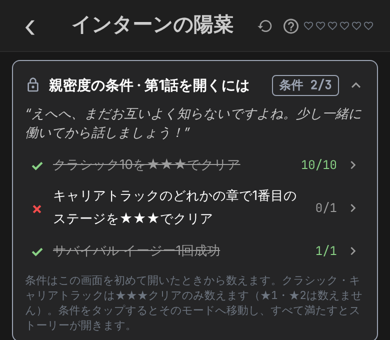
- レベルの条件: 第1話はすぐ、第2話はその同僚Lv.10、第3話はLv.25が必要です。
- 条件はウィンドウを初めて開いたあとから数えます。その前のプレイは入らないので、同僚を新しく手に入れたら、まずトークルームを一度開いておきましょう。何人もの同僚のウィンドウを開いておけば、1回のプレイで同時に満たされます。
- クラシックステージとキャリアトラックは★★★のクリアだけ認められます。
| 評価 | 第1話 | 第2話 | 第3話 |
|---|---|---|---|
| ノーマル | クラシック10、トラック1、イージー1回 | クラシック30、トラック5、イージー2回 | クラシック50、トラック10、イージー3回 |
| レア | クラシック101、トラック20、イージー5回 | クラシック133、トラック30、イージー10回 | クラシック166、トラック40、イージー15回 |
| エピック | クラシック200、トラック50、ノーマル1回 | クラシック233、トラック60、ノーマル5回 | クラシック266、トラック70、ノーマル10回 |
| レジェンド | クラシック301、トラック81、ハード1回 | クラシック350、トラック85、ハード3回 | クラシック400、トラック90、ハード5回 |
| 神話 | クラシック450、トラック91、極悪1階、メディア・配信#12 | クラシック475、トラック95、極悪2階、公共・行政#12 | クラシック500、トラック100、極悪4階、オープンソース#12 |
表のクラシックはその番号のステージ★★★、トラックはどの章でもその番号のステージ★★★、イージー、ノーマル、ハードはサバイバルの成功回数、極悪は1回で突破した階、#12はその分野のチームプロジェクト12番です。第2話、第3話にはレベルの条件が加わります。
答え方
新ストーリーを押すと同僚がメッセージを送り始めます。自分の番が来ると下に返信を選ぶと答えが2〜3個出て、1つ押すとストーリーが続きます。最後まで行くとストーリー完了、親密度アップが出て、次の話の条件のウィンドウが付きます。
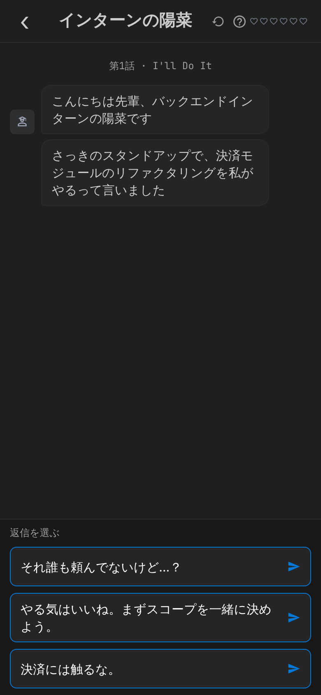
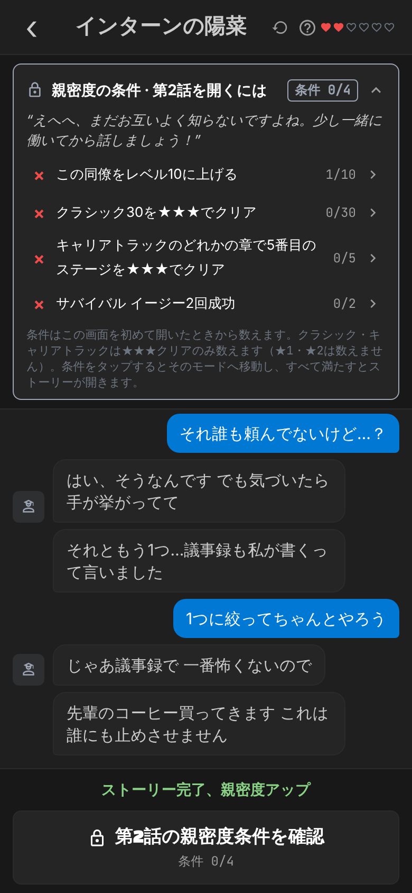
親密度のハートの貯まり方と効果
- 1話終えるとハート+1、その同僚らしい答えをうまく選ぶと+2です。3話まで全部 +2で終えると最大6個満ちます。右上のハート6つの枠ですぐ見えます。
- ハート1個ごとに、その同僚がチームプロジェクトで速度 +3%、正確度 +1%です。ハート6個なら速度 +18%、正確度 +6%なので、チームパワーが目に見えて上がります。
- ストーリーはハートだけくれます（コーヒーやコインはありません）。
- 答えが惜しかったら、親密度リセット券でその同僚のハートと会話を最初に戻せます。もう一度会話するときは、いい答えが黄色い枠で見えます。リセット券はショップか、トークルームの右上の↺ボタンで買います（コーヒー5,000でも買えます）。
業務タブのチャレンジモード 🏆#
サバイバル#
| 段階 | ファイル | 勝利のコーヒー | 特徴 |
|---|---|---|---|
| イージー | 20行 | 1 | 正解の行番号が黄色で見える |
| ノーマル | 120行 | 3 | |
| ハード | 500行 | 24 | コーヒーの主な収入源 |
| 極悪 | 500行から階ごとに +50行（最大2,000行） | 0 | クラシック500クリア後に解放。ランキング用 |
1分以内にバグを3つ見つけるとコーヒーがもらえる、何回でもできるコーヒー稼ぎのモードです。イージーで感覚をつかんで、手が慣れたらハード（1回24杯）に移りましょう ☕
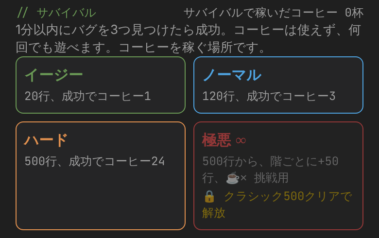
60秒以内にバグ3つ、コーヒーは使えず、誤タップは5秒減点です。何回でもできます。極悪は90秒で始まり、階1つ（バグ3つ）をクリアするたびに残り時間に30秒が足され、次のファイルは50行ずつ長くなります（2,000行まで、誤タップ10秒）。途中で出ると負けになります。
1回の遊び方
- 難易度を選ぶ業務タブ › サバイバルで、イージー、ノーマル、ハードのどれかを押します。極悪はクラシック500をクリアすると開きます。
- 今日の業務を確認見つけるバグ3つが出ます。イージーでは正解がそのまま見えます（何行目で、何を何に直すか）。業務開始を押すと時計が回ります。
- 行を押して間違った所を押す怪しい行を押すと拡大され、間違った記号を押すと直ります。イージーは左の行番号に黄色い丸が付いた行が正解です。
- 結果を受け取る3つ全部見つけるとデプロイ成功！とコーヒーが入ります。広告で報酬を2倍にするを押すと、その回のコーヒーをもう1回もらえます（広告削除パックがあれば自動）。もう一回を押すと新しいファイルですぐ続けます。
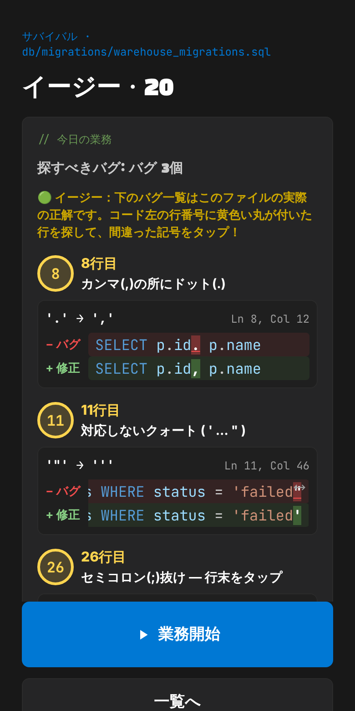
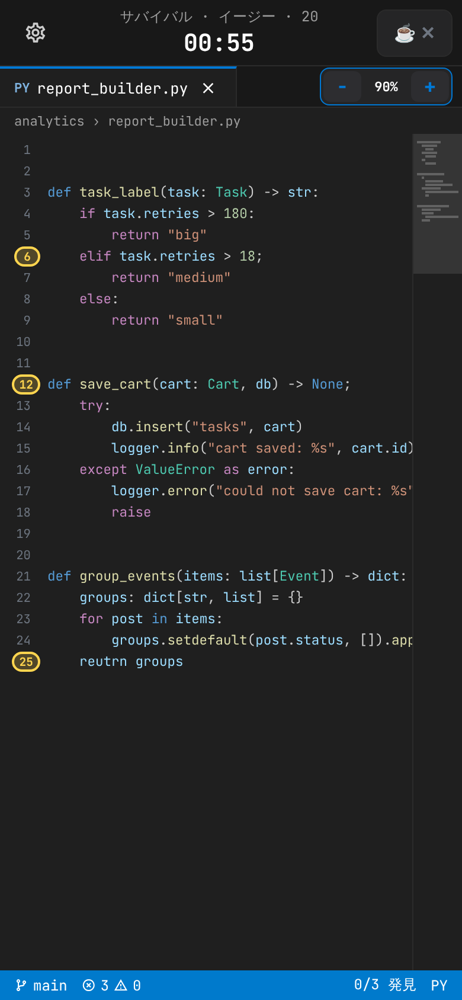
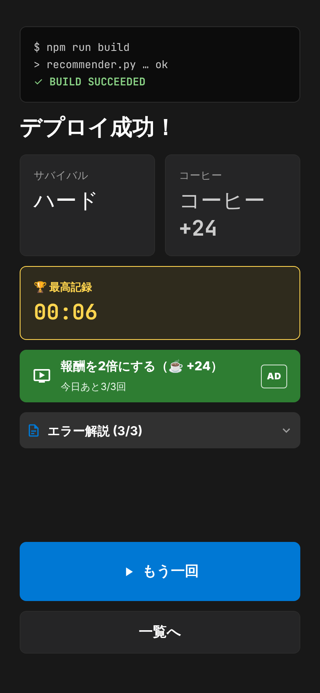
- ファイルは回ごとに新しく作られるので覚えられません。そのかわり同じバグの種類が繰り返すので、目がすぐ慣れます。
- 難易度ごとにいちばん速い記録が🏆として残ります。
- 勝った回は同僚チャンネルの親密度の条件（サバイバルのイージー、ノーマル、ハードN回成功）にも入ります。条件のウィンドウを先に開いておいてからやりましょう。
- 極悪はコーヒーなしでランキングの順位だけを競うモードです。順位はランキングで見ます。
始めた回を出たり、一時停止メニューの最初からやり直すを押したりすると負けになり、連勝が途切れます。アプリを閉じても同じです。
ハードは500行なので最初は難しいですが、勝てばイージーの24倍です。ミニマップでファイル全体を流し見して、かっこの対応やコロン、セミコロンのように目立つバグから探すと勝率が上がります。
無限徹夜（タワー）#
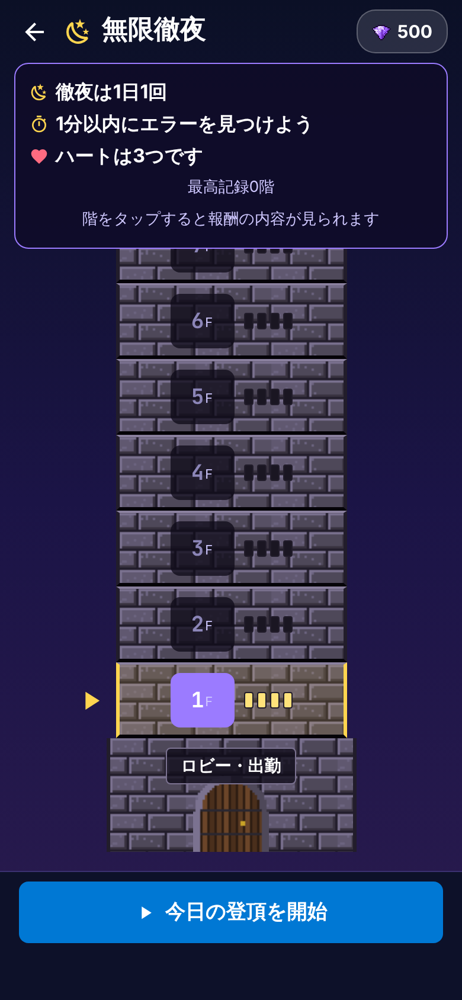
- 1日1回1階から登ります。階ごとに1分、ハート3つ、本物のコーヒーは使えません。
- 階ごとに補給品が新しく出ます: 徹夜コーヒー（バグ1つをすぐ修正）、エナジードリンク（5階から、ハート +1）、夜食（7階から、+15秒）。残りは次の階に持ち越せません。
- 徹夜の同僚は1、9、24、44、69階をクリアすると合流します。徹夜の装備は15階をクリアするとノイズキャンセリングヘッドホン（偽の報告 -40%）、35階をクリアするとデュアルモニター（速度 +15%）、60階をクリアするとメカニカルキーボード（階ごとに最初のミスはハートが減らない）ができます。
- 大きさ: 1〜30階は150〜1,455行（バグ3〜6）、31〜60階は2,000〜13,000行、61〜100階は20,000行まで（バグ最大27）。
- 失敗するとその日の登頂は終わり。広告（または広告削除パック）で復活すると、落ちた階を最初からもう一度やります。
- 31階からはインターネットにつながっていないと登れません。
| 報酬 | 内容 |
|---|---|
| 階の初クリア | コイン100 + コーヒー1（100階全部クリアでコイン10,000、コーヒー100） |
| 30 / 60 / 100階の初クリア | + ノーマルパック / レアパック / エピックパック |
| 30 / 60 / 100階（登頂のたび） | 神話のかけら1（1日最大3） |
1階の登り方
- 登頂開始業務タブ › 無限徹夜のカードから入って今日の登頂を開始を押します。続けて登るときは、ボタンが17階に挑戦のように変わります。
- 階の情報と補給品を確認その階の行数、バグの数、ルール、この階でもらう補給品、徹夜の同僚、徹夜装備が出ます。徹夜開始を押すと1分が始まります。
- 報告箱の処理徹夜の同僚が怪しい行を見つけると下の報告箱に上がります。本物のバグなら修正、違えば誤報を押します。偽の報告を修正するとハートが1つ減ります。自分で行を押して直してもOKです。
- 補給品を使うコードの下のアイコンの列が補給品です。押すとすぐ使われます。バグを全部直すとその階はクリア、次の階に進みます。
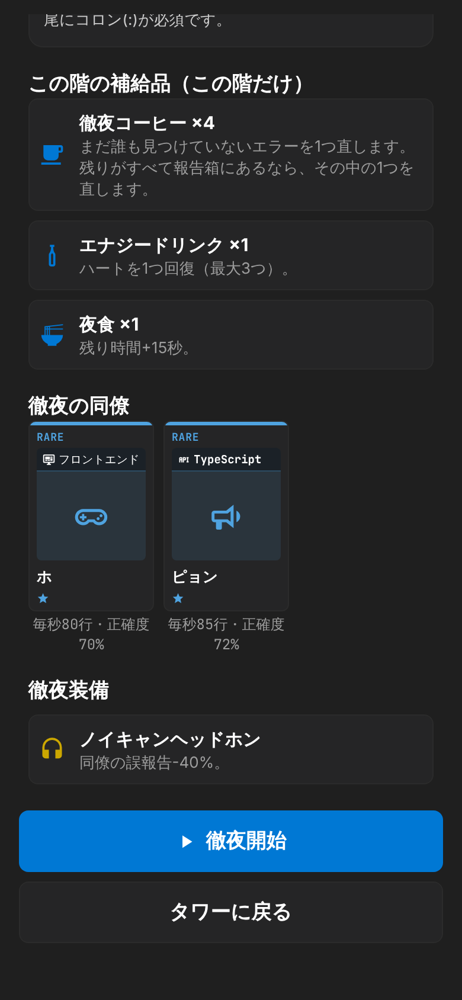
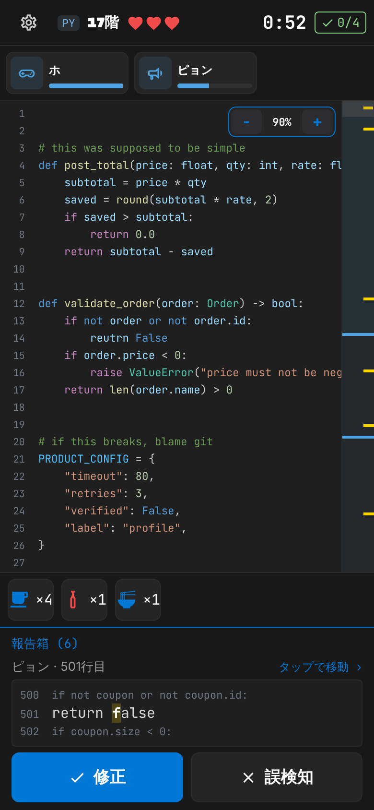
徹夜の補給品まとめ
| 補給品 | 出る階 | 効果 |
|---|---|---|
| ☕ 徹夜コーヒー | すべての階（30階まではバグの数だけ、その上はバグの約70%） | まだ誰も見つけていないバグを1つ直します。残りのバグが全部報告箱にあれば、そのうち1つを直します |
| 🥤 エナジードリンク | 5階から階ごとに1個 | ハートを1つ回復（最大3つ） |
| 🍜 夜食 | 7階から階ごとに1個 | 残り時間 +15秒 |
補給品は階ごとに決まっていて、その階でだけ使えます。残りは次の階に持っていけないので、惜しまず全部使って上がりましょう。本物のコーヒー（☕の通貨）はここでは使われないので減りません。
階の報酬の受け取り方
- 黄色い受け取るの表示を探すクリアした階のうち受け取るものがある階の右に、黄色い受け取るが出ます。上の案内欄にも受け取れる報酬N個と出ます。
- 階を押すその階を押すとN階の報酬のウィンドウが開きます。初クリアの報酬（コイン100、コーヒー1、30、60、100階はカードパック）と神話のかけらの欄に受け取れますが見えます。
- 受け取るウィンドウの下の受け取るを押せば終わりです。
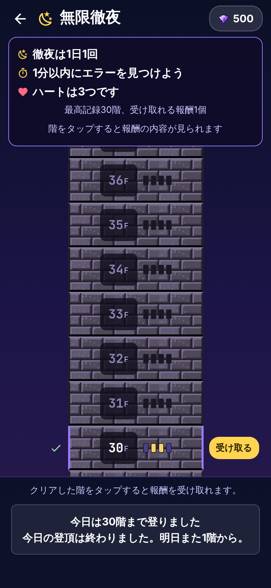
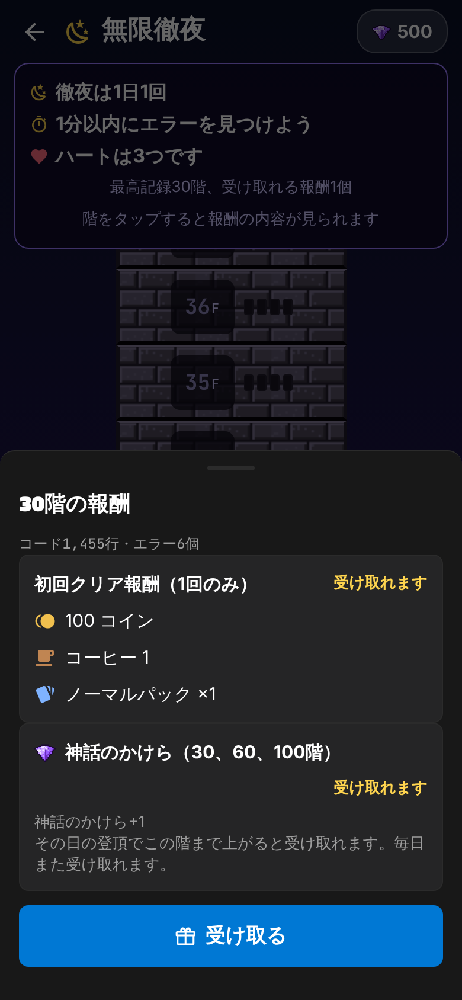
その日受け取らなかった報酬は次の日受信箱に無限徹夜の報酬の手紙として集まります。受信箱で受け取るを押せばよく、その手紙も忘れたら1日後に自動で入ります。だから報酬を逃す心配はありません。
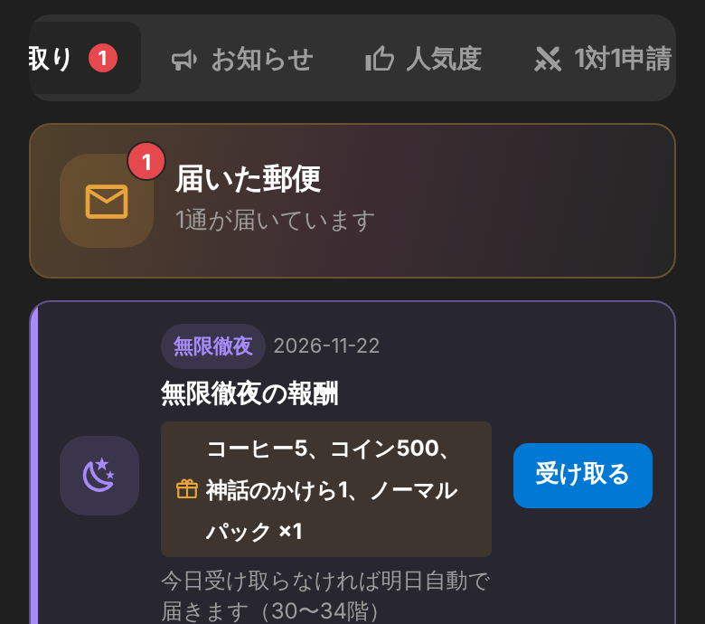
徹夜コーヒーは階の最後まで取っておきましょう。同僚に先に探させて、残ったバグに使うのが得です。どうせ次の階には持っていけないので、全部使って上がりましょう。
ノーコーヒー挑戦#
CTOエンディングを見たアカウントだけがオンにできるスイッチです（業務タブ）。オンにするとクラシックでコーヒーのヒントが使えず、1番から別に登っていきます（前のステージをノーコーヒー★★★でクリアすると次が開く）。★★★でクリアしたステージだけがノーコーヒー記録（☕ ✕）に残り、ノーコーヒー・クラシックのランキングに載ります。ノーコーヒーでクリアしても普通のクリア報酬はそのままもらえます。キャリアトラックは対象外です。
フレンドと一緒に 🤝#
ログインして、まずランキングでニックネームを決めましょう。そのあとは毎日のホットフィックスとフレンドのコーヒー、毎週のブレイムリレーと障害対応だけでもコインとコーヒーがコツコツ入ります ☕
下の機能はすべてGoogle、Kakao、Appleのアカウントでログインしてニックネームを決めると開きます。ニックネームはランキングで決め（2〜12文字、ハングル、英字、数字）、一度決めると変えられません。ほとんどはホームのいちばん上のフレンドアイコンの中にタブで集まっています。
| 機能 | 周期 | どこで | 報酬 |
|---|---|---|---|
| 人気度（いいね） | 毎日 | プロフィール、受信箱の人気度タブ | ティアの段階ごとにパック、コイン、コーヒー、CP、マスター10で神話の同僚 |
| Git Blameリレー | 毎週 | フレンド › ブレイム | 最大コイン24,000 + エピックパック |
| 今日のニックネーム抽選 | 毎日 | 出席チェック、受信箱のお知らせ | エピックパック3からコーヒー1,000まで |
| 今日のホットフィックス | 毎日 | フレンド › ホットフィックス | 平日コイン2,000 + コーヒー10、週末コイン3,000 + コーヒー20 |
| サーバー障害対応 | 毎週 | フレンド › 障害対応 | 最大コイン10,000 + コーヒー20 + ノーマルパック |
| フレンドとコーヒー | 毎日 | フレンド › フレンド | フレンドにコーヒー3 |
| ランキング | 常時 | ホーム › ランキング | 順位 |
| コードレビュー1対1 | 常時 | プロフィール › 1対1を申し込む | 戦績（通貨なし） |
| バグバウンティ | 常時 | ホーム › バウンティ | レジェンドパック、コーヒー、神話のかけら、神話の同僚まで |
人気度（いいね） 👍#
人気度はほかのプレイヤーが自分に押してくれたいいねの数です。集まった数に応じてブロンズからチャレンジャーまでティアが上がり、ティアの中の段階に上がるたびに報酬を1つずつもらえます。自分では上げられず、ほかの人が押してくれたときだけ上がります。
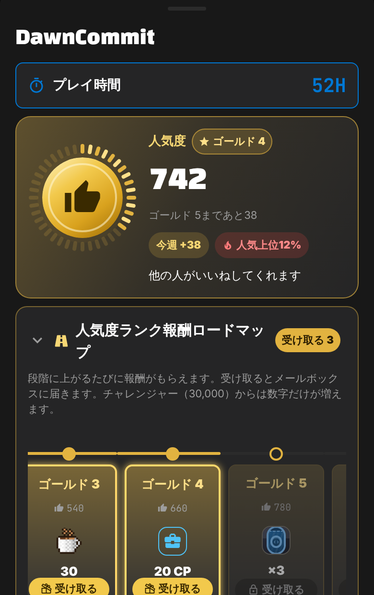
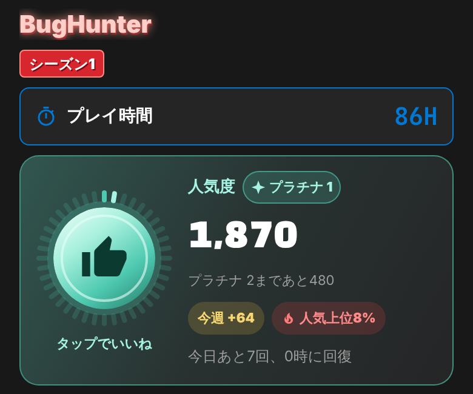
いいねのやりとりの仕方
- プロフィールを開くランキングの名前やフレンド一覧のフレンドを押すと、その人のプロフィールが開きます。
- メダルを押す人気度パネルのメダルの下にタップでいいねが見えたら押します。右に今日あとN回、0時に回復で今日あと何回あげられるかが出ます。
- 同じ人には1日1回です。もうあげていれば今日はいいね済みに変わります。1人が1日にもらえるいいねは40個までなので、その日いっぱいになった人にはあげられません。
- いいねのお返し誰かが自分にいいねをすると、受信箱の人気度タブに名前が出ます。お返しを押すとすぐ返せるので、お互いにやりとりすれば2人とも上がります。
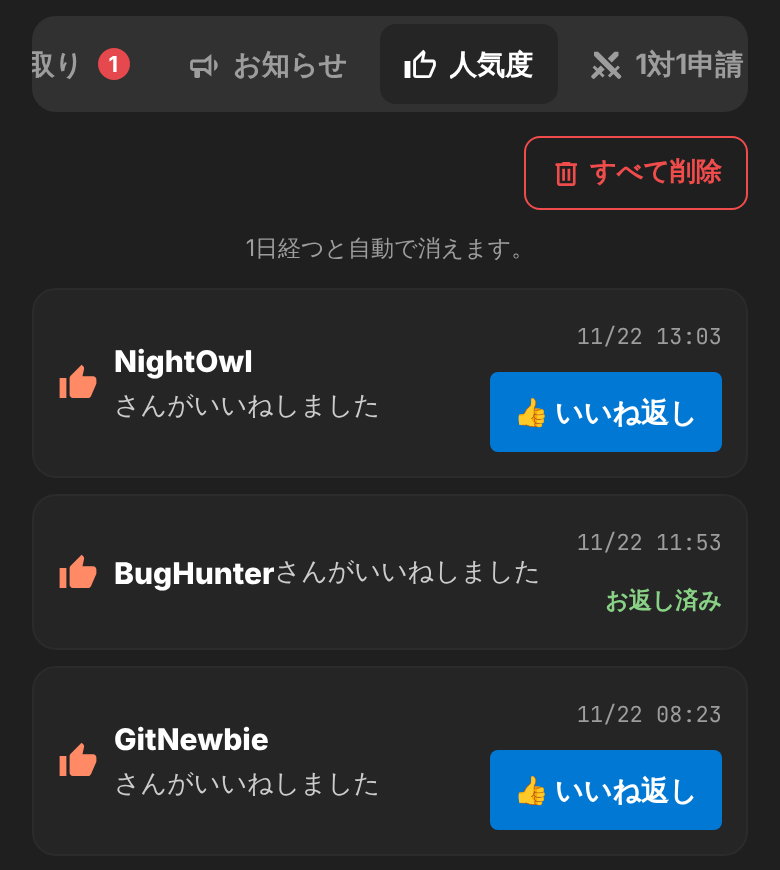
ティアと報酬
チャレンジャーの下の6ティアはそれぞれ10段階（例: ゴールド1〜ゴールド10）に分かれていて、段階に上がるたびに報酬を1つもらえます。ロードマップで受け取るを押すと受信箱に届きます。チャレンジャー（30,000）からは報酬なしで数だけ上がります。
| ティア | 開始のいいね | 段階ごと | 10段階の報酬合計 |
|---|---|---|---|
| ブロンズ | 1 | 10 | ノーマルパック9、コイン6,000、コーヒー60、CP 40 |
| シルバー | 100 | 20 | ノーマルパック6、コイン4,000、コーヒー90、CP 60 |
| ゴールド | 300 | 120 | ノーマルパック9、コイン6,000、コーヒー60、CP 40 |
| プラチナ | 1,500 | 850 | レアパック4、コイン10,000、コーヒー120、CP 50、神話のかけら9 |
| ダイヤ | 10,000 | 700 | エピックパック9、コイン30,000、コーヒー200、CP 200 |
| マスター | 17,000 | 1,300 | レジェンドパック3、コイン40,000、コーヒー2,000、CP 400、マスター10（28,700）で神話の同僚1 + 神話のかけら30 |
| チャレンジャー | 30,000 | - | 報酬なしで数だけ |
1段階の報酬はパック、コイン、コーヒー、CPが交互に出ます。たとえばゴールドはノーマルパック3、コイン2,000、コーヒー30、CP 20の順に回り、プラチナは3、6、9段階が神話のかけら3です。
シルバー（100）からはランキングとフレンド一覧の自分の名前の横にティアの表示が付き、たくさんもらった人には人気上位N%のバッジも出ます。フレンド同士で毎日お返しのいいねをするだけでも、ブロンズとシルバーはすぐ過ぎます。段階の報酬は受け取るを押さないと入らないので、ロードマップの受け取るNバッジをときどき確認しましょう。
Git Blameリレー 🔍#
毎週フレンドとチームを組んで20,000行のレガシーファイル1つに隠れたバグ30個を一緒に探す週間協力モードです。直した行には直した人の名前が残ります。コーヒー（ヒント）は使えず、時間制限はありません。月曜0時に新しいファイルが開き、日曜24時（韓国時間）に締め切ります。
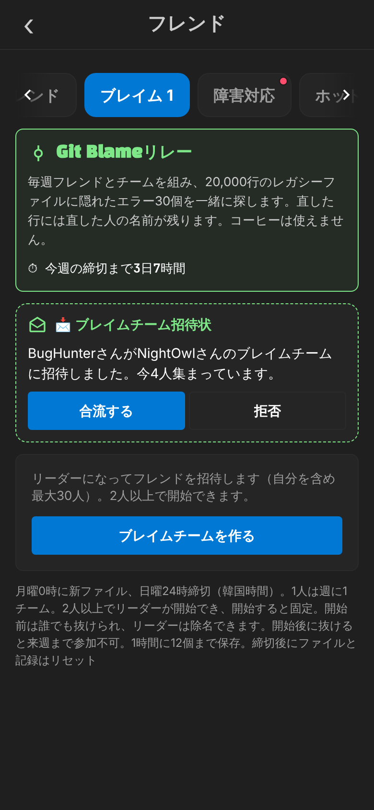
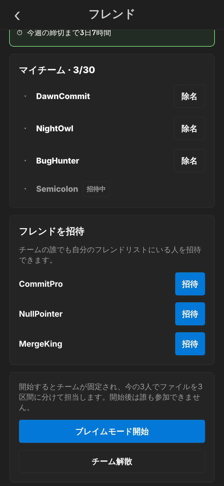
- チームを作るか合流するホーム › フレンド › ブレイムタブでブレイムチームを作るを押すと自分がリーダーになります。フレンドが送ったブレイムチームの招待状があれば合流するで入ります。1人は1週間に1チームにしか入れません。
- フレンドを招待メンバーなら誰でも自分のフレンド一覧にいるフレンドを招待できます。チームは自分を含めて最大30人（招待中を含む）です。
- 開始2人以上集まったらリーダーがブレイムモード開始を押します。始めるとチームがロックされ、ファイルが人数分の区間に均等に分かれて1区間ずつ担当します（6人なら約3,300行ずつ）。
- ファイルを開くタブのファイルを開くで入ります。自分の区間から見ますが、ほかの区間のバグをかわりに直してもOKです。
- 保存バグを見つけたら、上の保存を押さないとチームの記録に自分の名前が残りません。同じバグをフレンドが先に保存していたらマージコンフリクトが起きて、その行は先に保存した人のものになります。
- チェックするチェックで行に旗を立てておくと、次に自分のチェックから続けるでその場所から見られます。1人1つです。
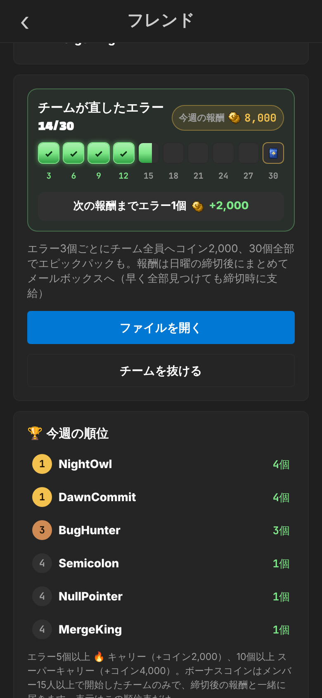
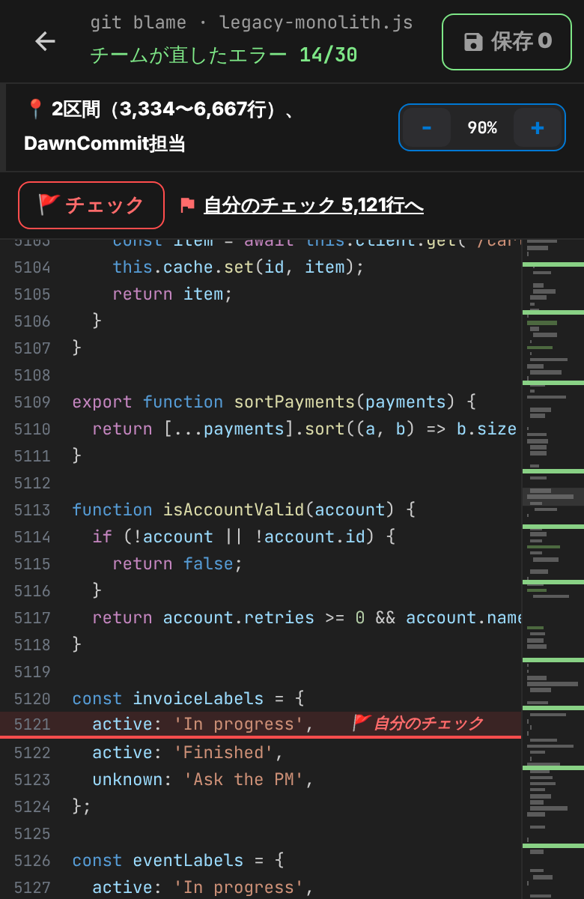
| 報酬（メンバー全員） | 内容 |
|---|---|
| チームがバグを3個直すごとに | コイン2,000（10段階） |
| 30個全部 | コイン20,000 + エピックパック1 |
| キャリーボーナス（15人以上で始めたチームだけ） | 自分で5個以上直すと +コイン2,000、10個以上ならスーパーキャリー +コイン4,000 |
| 最大 | コイン24,000 + エピックパック1 |
報酬は早く全部見つけても日曜の締め切り後にまとめて受信箱に届きます。締め切り前に保存したバグだけが入るので、見つけたらすぐ保存しましょう。
開始前は誰でも抜けられて、リーダーは除名もできます。でも始まったチームから抜けると今週の報酬がもらえず、来週のブレイムにも参加できません。
今日のニックネーム抽選 🎰#
毎日昨日出席チェックした人の中から5人を選ぶ抽選です。申し込みは不要で、出席チェックさえすれば次の日の抽選の対象になります。1〜3番は出席した全員が対象で、4〜5番はシーズンパスを持っている人の中から選びます。7日以内に当選した人は除いて選びます（人が足りなければ制限なし）。
| 枠 | 対象 | 報酬 |
|---|---|---|
| 1番 | 昨日出席した全員 | エピックパック3 |
| 2番 | 昨日出席した全員 | レアパック1 |
| 3番 | 昨日出席した全員 | コーヒー100 |
| 4番 | シーズンパスを持っている人 | コイン10,000 |
| 5番 | シーズンパスを持っている人 | コーヒー1,000 |
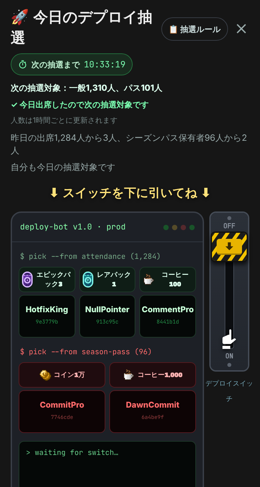
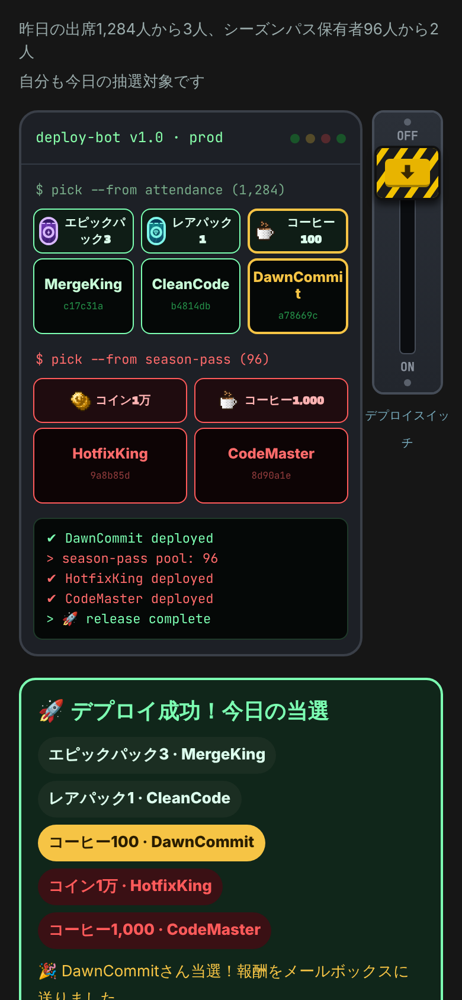
- 抽選を開く出席チェックのシートの下の今日のニックネーム抽選カードのスイッチを下ろしに行く、または受信箱のお知らせタブの抽選カードを押します。
- デプロイスイッチを下ろす右のデプロイスイッチを下に引くと5つの枠が回り、順番に当選者で止まります。
- 報酬を受け取る自分のニックネームが出たら、抽選を見終わった瞬間に報酬が受信箱に届きます。7日以内に見ればOKです。結果は抽選をもう一度見るで何回でも見られます。
画面の上の次の抽選対象に、今日出席した人数が1時間ごとに更新されます。✓ 今日出席したので次の抽選対象ですが見えたら、明日の抽選に入っています。出席チェックはログインしたアカウントだけできるので、ゲストならまずログインしましょう。
今日のホットフィックス 🔥#
毎日0時（韓国時間）に新しいコードファイルが1つ開く、1人でやる毎日のミッションです。バグを全部見つけると、次の日に受信箱に報酬が届きます。ホーム › フレンド › ホットフィックスタブでやります。まだやっていなければタブに赤い点が出ます。
| 日 | ファイル | コード | 報酬（翌日の受信箱） |
|---|---|---|---|
| 平日（月〜金） | 100行、バグ3つ | 人ごとに違うコード | コイン2,000 + コーヒー10 |
| 週末（土〜日） | 300行、バグ5つ | 全ユーザーが同じコード | コイン3,000 + コーヒー20 |
- ホットフィックス開始タブのホットフィックス開始（続きなら続ける）を押してファイルを開きます。
- バグの行を押すバグだと思う行を押すとすぐ記録されます。間違えても減点はなく、時間制限もありません。コーヒーのヒントは使えません。
- しおりしおりを押して行を押すと、自分にだけ見える印ができます。どこまで見たかメモしておくのにぴったりです。
- 全部見つけたら終わりパッチ配布完了が出たら今日は終わりです。次の日に受信箱に報酬が届き、タブに昨日のホットフィックス完了！が出ます。
1つでも見つけられずに日付が変わると報酬はありません。週末のホットフィックスはみんな同じコードなので、フレンドと話しながら探してもOKです。
サーバー障害対応 🚨#
毎週月曜0時に全ユーザーが一緒に直すコードベース1つが開く週間協力モードです（日曜24時締め切り）。ホーム › フレンド › 障害対応タブでやります。大きさは先週の参加者数で決まります。
| 先週の参加者 | コードベース |
|---|---|
| 0人 | 1,000行、バグ5つ |
| 30人 | 20,000行、バグ30個 |
| それ以上 | 参加者数に応じてバグが増えます（最大1,000,000行、バグ2,000個） |
- ファイルを選ぶコードベースは約2,000行ずつ、たくさんのファイルに分かれています。ファイル一覧にファイルごとのバグの数、残りの数、今見ている人の数が出ます。残りエラーが多い順で選んで開きます。
- 探す同じバグは先に見つけた1人だけが認められます。ほかの人が直した行にはその人の名前が付きます。1人は1週間に10個まで見つけられます。
- デプロイ点検すべてのバグが見つかるとデプロイ点検が開きます。自分だけの200行のファイル（バグ3つ）なので、遅れて来ても貢献を満たせます。
- 貢献3点を満たす貢献は自分が見つけたバグとデプロイ点検で見つけたバグを合わせた数です。3点以上でその週の報酬がもらえます。満たすとタブの赤い点が消えます。
| 報酬（週が終わったあと受信箱、貢献3点以上） | 内容 |
|---|---|
| コイン | 最大10,000（みんなが直した割合だけ） |
| コーヒー | 最大20（みんなが直した割合だけ） |
| 100%復旧 | コイン10,000、コーヒー20、ノーマルパック1 |
たとえば全体が40%しか直せずに終わると、コイン4,000、コーヒー8です。自分がいくつ見つけたかよりみんながどれだけ直したかが報酬を決めるので、3点を満たしたあとも残りのバグが多いファイルを手伝うとみんなが得をします。先週の結果はタブのいちばん上の先週の障害対応結果で見られます。
フレンドとコーヒー ☕#
- コーヒーを送る: フレンド1人に1日1回コーヒー3杯。フレンドの受信箱に自分のニックネームと一緒に届き、受け取った側は受信箱のコーヒー返しですぐ返せます。フレンドが30人なら、お互い毎日送るだけで1日コーヒー90です。
- ログインの表示: フレンドごとに● たった今ログイン、25分前にログインのように最後のログインが見えます。フレンドを押すとプロフィール（人気度、記録、1対1の申し込み）が開きます。
フレンドの追加
- ニックネームを決めるフレンドはニックネームで探します。ログインしたあと、まずランキングでニックネームを決めましょう。
- ニックネームで申請ホーム › フレンドのニックネームでフレンド追加欄に相手のニックネームを正確に書いて申請するを押します。申請を送りました。が出たら成功です。申請は1日3回、フレンドは最大30人までです。相手も自分に申請を送っていた場合は、すぐフレンドになります。
- ランキングから申請ランキングで名前を押すと下にウィンドウが開きます。👥 フレンド申請を押すとすぐ送られます。先にプロフィールで記録を見てもOKです。
受信した申請、送信した申請
フレンド一覧の上のタブで受信を押すと、自分に来た申請が見えます。承認するとすぐフレンド、拒否すると申請が消えます（相手に通知は行きません）。赤い丸のボタンはその場でブロックです。送信タブでは自分が送った申請を取り消しできます。
フレンドの削除とブロック
フレンドの行の右のボタンは順に、コーヒーを送る、人の形（削除）、赤い丸（ブロック）です。押すともう一度確認されるので、安心して押してOKです。
- 削除: フレンドから外れるだけです。あとでまた申請できます。
- ブロック: フレンドから外れて、お互いにフレンド申請を送れなくなります。ブロックした人はブロックタブに集まり、ブロック解除でいつでも解けます。
- 削除もブロックも相手に通知は行きません。ランキングやプロフィールのウィンドウからもフレンド削除、ブロックができます。
申請の受け取りをオフにする
知らない人からの申請がわずらわしければ、いちばん下のフレンド申請スイッチをOFFにしましょう。誰も申請を送れなくなり、来ていた申請も消えます。フレンド一覧はそのままです。その下の1対1申請スイッチは、コードレビュー1対1の申し込みを受けるかどうかを決めます。
ブレイムリレーにはフレンド一覧にいる人だけ招待できます。週間協力を大きくやりたければ、まずフレンドの数を増やしておきましょう。
ランキング 🏆#
| タブ | 順位の基準 | 同じなら |
|---|---|---|
| 極悪 | サバイバル極悪1回で見つけたバグの数（高い階が上） | 最後の階でより多く見つけた人、次に先に達成した人 |
| クラシック | ★★★でクリアしたクラシックステージの数（★1、★2は数えない） | そのステージのクリア時間の合計が短い人 |
| ノーコーヒー | コーヒーのヒントなしで★★★でクリアしたクラシックステージの数 | クリア時間の合計が短い人 |
| 徹夜 | 無限徹夜の最高到達階 | 先に達成した人 |
- 記録はプレイすると自動で上がります。別に提出するものはありません。
- TOP 100と、自分の上下10人を見せる自分の周りタブがあります。
- 名前を押すとその人のプロフィールが開きます。ここでいいね、フレンド申請、コードレビュー1対1の申し込みができます。
- ノーコーヒータブはノーコーヒー挑戦（CTOエンディングを見たアカウント）でクリアした記録だけが載ります。
コードレビュー1対1 ⚔️#
ほかのプレイヤーと同じ200行のファイルでバグ3つを誰がうまく見つけるか競う1対1です。2人が同時にログインする必要はなく、申し込んだ人が先にやって、相手があとで同じファイルをやります。通貨の報酬はなく、プロフィールにコードレビュー1対1戦績（勝ち、引き分け、負け）が残ります。
- 受け取りをオンにするフレンドタブのいちばん下の1対1申請スイッチをONにしないと、ほかの人から申し込めません。最初はオフです。
- 申し込みランキングやフレンド一覧から相手のプロフィールを開いて⚔ コードレビュー1対1を申し込むを押し、先にプレイします。最後まで終えると相手の受信箱に申し込みが届きます。
- 承認受け取った側は受信箱の1対1申請タブで承認して同じファイルをプレイします。拒否すると申し込んだ人の記録は無効になります。
- 結果多く見つけたほうが勝ち、同じなら時間が短いほう（0.1秒単位）が勝ちます。それも同じなら引き分けです。間違えて押すたびに +5秒です。
途中で出たりアプリを閉じたりすると、その回は無効です。承認して途中でよく抜けると、しばらく1対1ができなくなるので、やめたいときは1分後に出る降参を押しましょう。降参すると、それまでに見つけた数と時間で競います。
バグバウンティ 🐛#
ゲームのバグや新しいコンテンツの企画を送ると報酬がもらえる機能です。ホームのいちばん上のバグ報告アイコンで開きます。報酬はアカウントの受信箱に届くので、ログインしたアカウントだけ参加できます。
| 区分 | 評価 | 基本の報酬 |
|---|---|---|
| バグ | 致命的（進行不能、通貨やデータの損失） | レジェンドパック3、神話のかけら10、コーヒー3,000 |
| バグ | 高い（機能の故障、間違った報酬） | レジェンドパック1、コーヒー1,500 |
| バグ | 単純なバグ（直す価値があって修正された場合） | ノーマルパック1、コイン2,000（エピックパック1、コイン10,000まで） |
| 企画 | 大型採用（大型アップデートで反映） | レジェンドパック3、神話のかけら100（好きな神話の同僚1人）、コーヒー5,000 |
| 企画 | コンテンツ採用（新しいコンテンツとして反映） | レジェンドパック2、コーヒー3,000 |
アプリの案内どおり上記の報酬は基本的な目安です。これより低い価値、または高い価値の報酬が支給される場合があります。報酬は受信箱に届きます。
- 分類を選ぶ分類を選んでくださいを押して、重大な通貨バグ、進行不能、フリーズ、単純なバグ、その他のバグ、コンテンツ企画の提案から選びます。
- 内容を書くバグは何が起きたか、どの画面で何を押したか、どうすればまた起きるか、どう直せばいいかまで書きます。企画はどんなコンテンツか、なぜ面白いか、画面とルールと報酬を具体的に書きます。10文字以上必要です。
- 送信送信を押せば終わりです。アプリのバージョンと端末の種類も一緒に送られます。送った報告は画面のいちばん下の自分の報告で見られます。
バグは直し方まで具体的に書くほど高い等級をもらいやすいです。単純なバグは直し方がわからなくてもOKです。
周回ボーナス（CP） 🎓#
周回ボーナスはCPで買う永久ボーナスです。周回を始める前にホームの周回ボーナスで買い、前の段階を買うと次の段階が開きます。費用はその段階1つの値段です。27行74段階を全部買うには49,600 CPです。
CPのティア: 何から買う？#
| 評価 | ボーナス | 紹介 |
|---|---|---|
| 1ティア | 親からの仕送り、鋼の体力、平常心、年俸交渉の達人、退職金積立、経験者採用、ジム通い、常連割引、鉄人 | お金、体力、ストレス、昇進のように毎周回すぐ実感できるボーナスです。CPが貯まったらまずこれを上げましょう |
| 2ティア | 情報系出身バフ、コミットの草、推薦状、陽キャ力、飲み込みが早い、キャリア管理、新人ウェルカムキット、先行学習、発表の天才、遺伝子ガチャ当たり、医療保険、節約上手、週末コーダー、課長と同窓、手が速い、ゴールデンパラシュート | あればいいけれど急ぎではありません。1ティアを全部上げてCPが余ったら買いましょう |
| ヒロイン専用 | 恋愛体質、恋愛上手 | 恋愛、結婚エンディングを狙うときだけ必要です。等級に関係なく目標ができたら買いましょう |
ボーナス効果の一覧#
| ボーナス | I | II | III |
|---|---|---|---|
| 💰 親からの仕送り | 開始残高 +33.3万円 | 合計 +88.9万円 | 合計 +200万円 |
| ⌨️ 情報系出身バフ | 開始コーディング力 +10 | 合計 +20 | 合計 +30 |
| 📦 コミットの草 | 開始コミット +50 | 合計 +100 | 合計 +150 |
| 📣 推薦状 | 開始評判 +10 | 合計 +15 | 合計 +20 |
| 🤝 陽キャ力 | 開始好感度 +5 | 合計 +10 | 合計 +15 |
| 💪 鋼の体力 | 体力消耗 -5% | 合計 -10% | 合計 -15% |
| 🧘 平常心 | ストレス増加 -5% | 合計 -10% | 合計 -15% |
| ⚡ 飲み込みが早い | コミット獲得 +15% | 合計 +30% | 合計 +45% |
| 📈 年俸交渉の達人 | 週給 +5% | 合計 +10% | 合計 +15% |
| 💰 退職金積立 | 周回終了コイン +5% | 合計 +10% | 合計 +15% |
| 🎓 キャリア管理 | 周回終了CP +1 | 合計 +3 | 合計 +5 |
| 🎒 新人ウェルカムキット | ラバーダックを持ってスタート | デスクの観葉植物も一緒に | メカニカルキーボードまで |
| 📚 先行学習 | Gitを習得済みでスタート | SQLも | TypeScriptまで |
| 🎖️ 経験者採用 | 社員からスタート（インターン省略） | 主任からスタート | — |
| 💌 恋愛体質 | すべての縁の開始好感度 +4（氷室麗華を除く） | 合計 +7 | 合計 +10 |
| 🌹 恋愛上手 | デートがプロポーズの進み具合に +5% | 合計 +10% | 合計 +15% |
| 🏃 ジム通い | 運動1回が1.5回分（ジムの出会い） | 2回分に | — |
| 🎤 発表の天才 | 人事評価の点数 +2 | 合計 +4 | 合計 +7 |
| 💇 遺伝子ガチャ当たり | 髪が抜ける速さが半分 | ストレス、燃え尽きで抜けない | — |
| 🛡️ 医療保険 | 周回ごとの最初の燃え尽きは評判、髪の損失なし | — | — |
| 🐷 節約上手 | 生活費 -10% | 合計 -20% | 合計 -30% |
| 🌙 週末コーダー | サイドの進み具合 +15% | 合計 +30% | 合計 +50% |
| 💪 鉄人 | 体力100でスタート | + 毎週体力 +1 | + 毎週体力 合計 +3 |
| 🎓 課長と同窓 | リーダーの好感度 +4でスタート | 合計 +7 | 合計 +10 |
| 🛍️ 常連割引 | 消耗品の価格 -5% | 合計 -10% | 合計 -15% |
| ⏱️ 手が速い | チケット評価の基準時間 +5% | 合計 +10% | 合計 +15% |
| 💼 ゴールデンパラシュート | 燃え尽きのペナルティ半分（損失半分、休み1週） | — | — |
CP費用の一覧#
段階ごとにかかるCPです。前の段階を買うと次の段階が開きます。全部買うと49,600 CPです。
| ボーナス | I | II | III | 合計 |
|---|---|---|---|---|
| 💰 親からの仕送り | 500 | 1,000 | 1,500 | 3,000 |
| ⌨️ 情報系出身バフ | 200 | 400 | 600 | 1,200 |
| 📦 コミットの草 | 200 | 400 | 600 | 1,200 |
| 📣 推薦状 | 200 | 400 | 600 | 1,200 |
| 🤝 陽キャ力 | 200 | 400 | 600 | 1,200 |
| 💪 鋼の体力 | 500 | 1,000 | 1,500 | 3,000 |
| 🧘 平常心 | 500 | 1,000 | 1,500 | 3,000 |
| ⚡ 飲み込みが早い | 200 | 400 | 600 | 1,200 |
| 📈 年俸交渉の達人 | 500 | 1,000 | 1,500 | 3,000 |
| 💰 退職金積立 | 100 | 200 | 300 | 600 |
| 🎓 キャリア管理 | 100 | 200 | 300 | 600 |
| 🎒 新人ウェルカムキット | 200 | 400 | 600 | 1,200 |
| 📚 先行学習 | 100 | 200 | 300 | 600 |
| 🎖️ 経験者採用 | 200 | 400 | — | 600 |
| 💌 恋愛体質 | 1,000 | 2,000 | 4,000 | 7,000 |
| 🌹 恋愛上手 | 1,000 | 2,000 | 4,000 | 7,000 |
| 🏃 ジム通い | 100 | 200 | — | 300 |
| 🎤 発表の天才 | 200 | 400 | 600 | 1,200 |
| 💇 遺伝子ガチャ当たり | 100 | 200 | — | 300 |
| 🛡️ 医療保険 | 100 | — | — | 100 |
| 🐷 節約上手 | 500 | 1,000 | 1,500 | 3,000 |
| 🌙 週末コーダー | 200 | 400 | 600 | 1,200 |
| 💪 鉄人 | 500 | 1,000 | 1,500 | 3,000 |
| 🎓 課長と同窓 | 200 | 400 | 600 | 1,200 |
| 🛍️ 常連割引 | 500 | 1,000 | 1,500 | 3,000 |
| ⏱️ 手が速い | 100 | 200 | 300 | 600 |
| 💼 ゴールデンパラシュート | 100 | — | — | 100 |
次の周回を早く回すコツ ⏩#
- おすすめ配置を使う1周回20回まで無料。同じ週にまた押しても変わらないので気軽に押しましょう。
- 適当に処理は2週まで3週目から減点が付きます。連続を切るときは自分でやるでどの評価をもらってもOKです。
- メッセージはまとめて必須メッセージだけ答えて進めても周回は回ります。ただし好感度のある人を既読スルーすると損です。
- 経験者採用社員、主任から始めると昇進ルートが短くなります。
- 狙ったエンディングがもう外れたら周回を終了ホームの周回を終了は報酬なしで周回を捨てます。記録も残らず、周回の番号も使い回します。特定のエンディングだけを狙うときの早い再スタート用です。
- 有料でもっと速くCTO直行スケジュール（おすすめ配置無制限 + 毎週自動 + 昇進スキル自動）と機械学習オートパイロットを両方オンにすると⚡ フルオートなので、メッセージに答えて次の週へを押すだけです。
速く進めすぎると損です。10分以内に終わった周回は100週を満たしてもCP、コイン、コミットXP、完走クエストがありません。称号エンディング（20〜34週で終わる）は周回の数には入りますが、CP、コインと周回完走クエストはありません。
ショップの有料商品（画面のまま）#
価格はストアに表示された金額を確認してください。商品の中身だけまとめました。
| 商品 | 内容 |
|---|---|
| 広告削除パック | 広告なしですぐ受け取り + サバイバルと周回の報酬2倍（永久）、コーヒー1,000 |
| 機械学習オートパイロット | 毎週チケットをA〜Sで自動処理、ON/OFF（ストレス70以上なら休みます）、永久 |
| CTO直行スケジュール | おすすめ配置無制限 + 毎週自動 + 昇進に必要なスキルを自動習得、永久 |
| オールインワンパック | 月間出勤パス（30日） + 広告削除 + CTO直行スケジュール + 機械学習（アカウントごとに1回） |
| 親密度リセット券 | 同僚1人の親密度と会話を最初に戻し、いい答えを黄色い枠で表示（コーヒー5,000でも） |
| エンディング秘密ノート | エンディング図鑑のすべての発動条件を見る、永久（コーヒー10,000でも） |
| 新入社員ウェルカムパック | コーヒー600、コイン20,000、レアパック2、エピックパック1（アカウントごとに1回） |
| 主任昇進パック | コーヒー2,500、コイン30,000、神話のかけら3、エピックパック3、レジェンドパック1（アカウントごとに1回） |
| 神話人材の特別採用パック | 神話の同僚1人 + 神話のかけら150 + コイン180,000 + コーヒー2,000（アカウントごとに1回） |
| シーズンパス / シーズンパスプラス | パスの行の報酬 + 赤いニックネーム + シーズンバッジ / プラスは20段階飛ばしてスタート + レジェンドパック1 |
| 月間出勤パス | すぐコーヒー2,000 + 30日間毎日コーヒー300 |
| 神話のかけら月額パス | すぐかけら30 + 30日間毎日かけら1とコイン1,000 |
| 役員プレミアムパス | すぐエピックパック3、コーヒー3,000 + 30日間毎日コーヒー500とレアパック1 |
| コーヒーチャージ | 500 / 2,800 / 6,000 / 16,000 / 36,000杯、各商品の初回購入は2倍 |
課金なしでもすべてのエンディングが見られます。コーヒーはサバイバル、コインは出席、周回完走、無限徹夜で十分回ります 🙌
初心者によくあるミス ⚠️#
未処理、適当にCが5週続くと周回が終わります。インターンのときの適当に処理はほぼCです。
残業5日だと1週間に体力が約39減ります。倒れると1週の病欠、燃え尽きは2週の休みに評判 -10。燃え尽き3回で唐揚げ屋エンディングです。
判定はその週の最低体力、最高ストレスです。返信1つで0になったら、週末に休んでも倒れます。
100週を満たせなかった周回はCP、コインが0です。起業退社、退職勧告、唐揚げ屋エンディングもみんな同じです。
全部既読スルーの扱いになります。ヒロイン、リーダーの好感度が減ります。
1〜300は間違えなければ★★★です。コーヒーは時間を計る301番から必要です。
1足りないだけでも過負荷（速度1/4）でほぼ失敗します。開始前の画面でチームパワーが緑色か必ず見ましょう。
出席30日でコーヒー150、コイン30,000、レアパック10、エピックパック1、レジェンドパック1です。1日でも抜けるともったいないです。
よくある質問#
- クラシックステージとキャリアトラック、どっちから？
- どちらもコーヒーがもらえるので、やりやすいほうからでOKです。クラシックステージは1〜300が誤答の基準なのでゆっくりやれば★★★、キャリアトラックは章が全部開いているので選んでやりやすいです。
- コーヒーが足りません。
- サバイバルのハード（1回24杯）がいちばん効率がいいです。広告の無料コーヒー（30杯）とサバイバル2倍の広告も忘れずに。
- コインが貯まりません。
- 周回を100週まで終えるのがいちばん大きいです（2,000〜2,900 + デイリークエスト2,000）。出席の毎日1,000、無限徹夜の初クリアの階ごとの100もコツコツ貯まります。
- 同僚はキャリアのチケットを手伝ってくれますか？
- いいえ。同僚はチームプロジェクト専用です。レジェンド、神話の同僚のチケットのパッシブ（バグ減少）だけ例外です。
- チュートリアルの報酬がもらえていません。
- 受信箱を確認してください。エピックパック1個がアカウントごとに1回届きます。
- ノーコーヒーのスイッチがオンになりません。
- CTOエンディングを見たアカウントだけオンにできます。
- エンディングごとに何がもらえますか？
- 周回が終わると新しいエンディングごとにカードパック（基本エンディングはレア、称号エンディングはエピック）が届き、チームタブ › 図鑑でエンディングごとの報酬を受け取るでもう一度もらえます。詳しくはエンディング図鑑で。